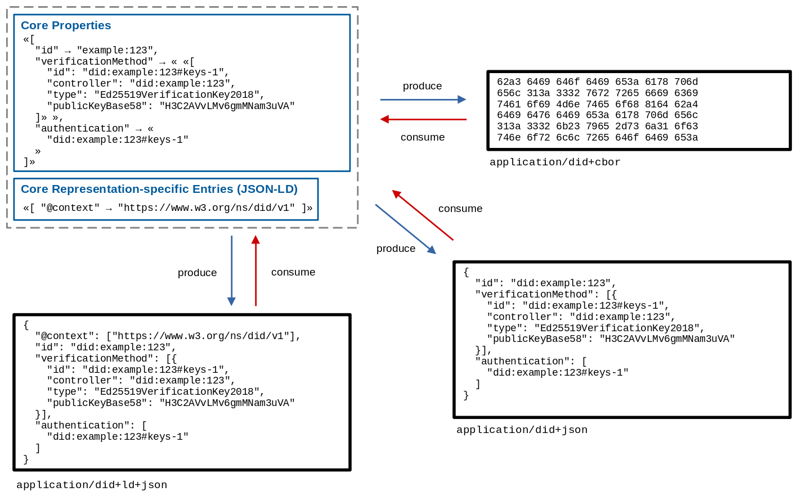

Decentralized identifiers (DIDs) are a new type of identifier that
enables verifiable, decentralized digital identity. A DID identifies any
subject (e.g., a person, organization, thing, data model, abstract entity, etc.)
that the controller of the DID decides that it identifies. In contrast to
typical, federated identifiers, DIDs have been designed so that they may
be decoupled from centralized registries, identity providers, and certificate
authorities. Specifically, while other parties might be used to help enable the
discovery of information related to a DID, the design enables the
controller of a DID to prove control over it without requiring permission
from any other party. DIDs are URIs that associate a DID
subject with a DID document allowing trustable interactions
associated with that subject.
This document specifies the DID syntax, a common data model, core properties,
serialized representations, DID operations, and an explanation of the process
of resolving DIDs to the resources that they represent.
Status of This Document
This section describes the status of this
document at the time of its publication. Other documents may supersede
this document. A list of current W3C publications and the latest revision
of this technical report can be found in the
W3C technical reports index at
https://www.w3.org/TR/.
The W3C Decentralized Identifier Working Group has published this document as a
W3C Candidate Recommendation and is requesting that software developers and DID
Method specification authors provide experimental implementations designed to
test the implementability of all of the features in this document.
To exit the W3C Candidate Recommendation phase, the W3C DID Working Group will
require two things: 1) for normative statements that are machine testable, at
least two interoperable implementations per feature, and 2) for normative
statements that are not machine testable, at least two demonstrations of
implementation per feature. A feature is defined as one or more functionally
related normative statements in the specification.
At present, there exist
82
experimental DID Method specifications, 32 experimental DID Method driver
implementations, and a Candidate Recommendation test suite that determines
whether or not a given implementation is conformant with this specification.
Readers are advised to heed the DID Core issues and DID Core Test Suite
issues that each contain the latest list of concerns and proposed changes
that might result in alterations to this specification.
This document was published by the Decentralized Identifier Working Group as a
Candidate Recommendation Snapshot.
This document is intended to become a W3C Recommendation.
Publication as a Candidate Recommendation does not imply endorsement
by the W3C Membership. A Candidate Recommendation Snapshot has received
wide review
and is intended to gather
implementation experience.
This Candidate Recommendation is not expected to advance to Proposed Recommendation any earlier than 18 April 2021.
This document was produced by a group
operating under the
W3C Patent
Policy.
W3C maintains a
public list of any patent disclosures
made in connection with the deliverables of
the group; that page also includes
instructions for disclosing a patent. An individual who has actual
knowledge of a patent which the individual believes contains
Essential Claim(s)
must disclose the information in accordance with
section 6 of the W3C Patent Policy.
As individuals and organizations, many of us use globally unique identifiers in
a wide variety of contexts. They serve as communications addresses (telephone
numbers, email addresses, usernames on social media), ID numbers (for passports,
drivers licenses, tax IDs, health insurance), and product identifiers (serial
numbers, barcodes, RFIDs). URIs (Uniform Resource Identifiers) are used for
resources on the Web and each web page you view in a browser has a globally
unique URL (Uniform Resource Locator).
The vast majority of these globally unique identifiers are not under our
control. They are issued by external authorities that decide who or what they
identify and when they can be revoked. They are useful only in certain contexts
and recognized only by certain bodies not of our choosing. They might
disappear or cease to be valid with the failure of an organization. They might
unnecessarily reveal personal information. In many cases, they can be
fraudulently replicated and asserted by a malicious third-party, which is
more commonly known as "identity theft".
The Decentralized Identifiers (DIDs) defined in this specification are a new
type of globally unique identifier. They are designed to enable individuals and
organizations to generate their own identifiers using systems they trust. These
new identifiers enable entities to prove control over them by authenticating
using cryptographic proofs such as digital signatures.
Since the generation and assertion of Decentralized Identifiers is
entity-controlled, each entity can have as many DIDs as necessary to maintain
their desired separation of identities, personas, and interactions. The use of
these identifiers can be scoped appropriately to different contexts. They
support interactions with other people, institutions, or systems that require
entities to identify themselves, or things they control, while providing control
over how much personal or private data should be revealed, all without depending
on a central authority to guarantee the continued existence of the identifier.
This specification does not presuppose any particular technology or cryptography
to underpin the generation, persistence, resolution, or interpretation of DIDs.
For example, implementers can create Decentralized Identifiers based on
identifiers registered in federated or centralized identity management systems.
Indeed, almost all types of identifier systems can add support for DIDs. This
creates an interoperability bridge between the worlds of centralized, federated,
and decentralized identifiers. This also enables implementers to design specific
types of DIDs to work with the computing infrastructure they trust, such as
distributed ledgers, decentralized file systems, distributed databases, and
peer-to-peer networks.
This specification is for:
Anyone that wants to understand the core architectural principles that
are the foundation for Decentralized Identifiers;
Software developers that want to produce and consume Decentralized Identifiers
and their associated data formats;
Systems integrators that want to understand how to use Decentralized
Identifiers in their software and hardware systems;
Specification authors that want to create new DID infrastructures, known as DID
methods, that conform to the ecosystem described by this document.
1.1 A Simple Example
This section is non-normative.
A DID is a simple text string consisting of three parts: 1) the
did URI scheme identifier, 2) the identifier for the DID
method, and 3) the DID method-specific identifier.
Figure 1
A simple example of a decentralized identifier (DID)
{
"@context": "https://www.w3.org/ns/did/v1",
"id": "did:example:123456789abcdefghi",
"authentication": [{
// used to authenticate as did:...fghi
"id": "did:example:123456789abcdefghi#keys-1",
"type": "Ed25519VerificationKey2020",
"controller": "did:example:123456789abcdefghi",
"publicKeyMultibase": "zH3C2AVvLMv6gmMNam3uVAjZpfkcJCwDwnZn6z3wXmqPV"
}]
}
1.2 Design Goals
This section is non-normative.
Decentralized Identifiers are a component of larger systems, such as the
Verifiable Credentials ecosystem [VC-DATA-MODEL], which influenced the design
goals for this specification. The design goals for Decentralized Identifiers
are summarized here.
Goal
Description
Decentralization
Eliminate the requirement for centralized authorities or single point failure in
identifier management, including the registration of globally unique
identifiers, public verification keys, services, and other information.
Control
Give entities, both human and non-human, the power to directly control their
digital identifiers without the need to rely on external authorities.
Privacy
Enable entities to control the privacy of their information, including minimal,
selective, and progressive disclosure of attributes or other data.
Security
Enable sufficient security for requesting parties to depend on DID
documents for their required level of assurance.
Proof-based
Enable DID controllers to provide cryptographic proof when interacting
with other entities.
Discoverability
Make it possible for entities to discover DIDs for other entities, to
learn more about or interact with those entities.
Interoperability
Use interoperable standards so DID infrastructure can make use of
existing tools and software libraries designed for interoperability.
Portability
Be system- and network-independent and enable entities to use their digital
identifiers with any system that supports DIDs and DID methods.
Simplicity
Favor a reduced set of simple features to make the technology easier to
understand, implement, and deploy.
Extensibility
Where possible, enable extensibility provided it does not greatly hinder
interoperability, portability, or simplicity.
1.3
Architecture Overview
This section is non-normative.
This section provides a basic overview of the major components of
Decentralized Identifier architecture.
Figure 2
Overview of DID architecture and the relationship of the basic components.
DIDs and DID URLs
A Decentralized Identifier, or DID, is a URI composed of three
parts: the scheme did:, a method identifier, and a unique,
method-specific identifier specified by the DID method. DIDs are
resolvable to DID documents. A DID URL extends the syntax of a
basic DID to incorporate other standard URI components such as
path, query, and fragment in order to locate a particular
resource—for example, a cryptographic public key inside a DID
document, or a resource external to the DID document.
These concepts are elaborated upon in § 3.1 DID Syntax and § 3.2 DID URL Syntax.
DID subjects
The subject of a DID is, by definition, the entity identified by the
DID. The DID subject might also be the DID controller.
Anything can be the subject of a DID: person, group, organization,
thing, or concept. This is further defined in § 5.1.1 DID Subject.
DID controllers
The controller of a DID is the entity (person, organization, or
autonomous software) that has the capability—as defined by a DID
method—to make changes to a DID document. This capability is
typically asserted by the control of a set of cryptographic keys used by
software acting on behalf of the controller, though it might also be asserted
via other mechanisms. Note that a DID might have more than one
controller, and the DID subject can be the DID controller, or one
of them. This concept is documented in § 5.1.2 DID Controller.
Verifiable data registries
In order to be resolvable to DID documents, DIDs are typically
recorded on an underlying system or network of some kind. Regardless of the
specific technology used, any such system that supports recording DIDs
and returning data necessary to produce DID documents is called a
verifiable data registry. Examples include distributed ledgers,
decentralized file systems, databases of any kind, peer-to-peer networks, and
other forms of trusted data storage. This concept is further elaborated upon in
§ 8. Methods.
DID methods are the mechanism by which a particular type of DID
and its associated DID document are created, resolved, updated, and
deactivated. DID methods are defined using separate DID method
specifications as defined in § 8. Methods.
As well as sections marked as non-normative, all authoring guidelines, diagrams, examples, and notes in this specification are non-normative. Everything else in this specification is normative.
The key words MAY, MUST, MUST NOT, OPTIONAL, RECOMMENDED, REQUIRED, SHOULD, and SHOULD NOT in this document
are to be interpreted as described in
BCP 14
[RFC2119] [RFC8174]
when, and only when, they appear in all capitals, as shown here.
This document contains examples that contain JSON, CBOR, and JSON-LD content.
Some of these examples contain characters that are invalid, such as inline
comments (//) and the use of ellipsis (...) to denote
information that adds little value to the example. Implementers are cautioned to
remove this content if they desire to use the information as valid JSON, CBOR,
or JSON-LD.
Some examples contain terms, both property names and values, that are not
defined in this specification. These are indicated with a comment (//
external (property name|value)). Such terms, when used in a DID
document, are expected to be registered in the DID Specification Registries
[DID-SPEC-REGISTRIES] with links to both a formal definition and a JSON-LD
context.
Interoperability of implementations for DIDs and DID documents is
tested by evaluating an implementation's ability to create and parse DIDs
and DID documents that conform to this specification. Interoperability
for producers and consumers of DIDs and DID documents is provided
by ensuring the DIDs and DID documents conform. Interoperability
for DID method specifications is provided by the details in each DID
method specification. It is understood that, in the same way that a web
browser is not required to implement all known URI schemes, conformant
software that works with DIDs is not required to implement all known
DID methods. However, all implementations of a given DID method
are expected to be interoperable for that method.
A conforming DID is any concrete expression of the rules specified in
§ 3. Identifier which complies with relevant normative statements in
that section.
A conforming DID document is any concrete expression of the data
model described in this specification which complies with the relevant normative
statements in § 4. Data Model and § 5. Core Properties. A
serialization format for the conforming document is deterministic,
bi-directional, and lossless, as described in § 6. Representations.
A conforming DID resolver is any algorithm realized as software
and/or hardware that complies with the relevant normative statements in
§ 7.1 DID Resolution.
A conforming DID URL dereferencer is any algorithm realized as
software and/or hardware that complies with the relevant normative statements in
§ 7.2 DID URL Dereferencing.
A conforming DID method is any specification that complies with the
relevant normative statements in § 8. Methods.
2. Terminology
This section is non-normative.
This section defines the terms used in this specification and throughout
decentralized identifier infrastructure. A link to these terms is
included whenever they appear in this specification.
authenticate
Authentication is a process by which an entity can prove it has a specific
attribute or controls a specific secret using one or more verification
methods. With DIDs, a common example would be proving control of the
cryptographic private key associated with a public key published in a DID
document.
binding
A concrete mechanism used by a caller to invoke a DID resolver or a
DID URL dereferencer. This could be a local command line tool, a software
library, or a network call such as an HTTPS request.
decentralized identifier (DID)
A globally unique persistent identifier that does not require a centralized
registration authority and is often generated and/or registered
cryptographically. The generic format of a DID is defined in § 3.1 DID Syntax. A specific DID scheme is defined in a DID
method specification. Many—but not all—DID methods make use of
distributed ledger technology (DLT) or some other form of decentralized
network.
An entity that has the capability to make changes to a DID document. A
DID might have more than one DID controller. The DID controller(s)
can be denoted by the optional controller property at the top level of the
DID document. Note that a DID controller might be the DID
subject.
DID delegate
An entity to whom a DID controller has granted permission to use a
verification method associated with a DID via a DID
document. For example, a parent who controls a child's DID document
might permit the child to use their personal device in order to
authenticate. In this case, the child is the DID delegate. The
child's personal device would contain the private cryptographic material
enabling the child to authenticate using the DID. However, the child
might not be permitted to add other personal devices without the parent's
permission.
The portion of a DID URL that follows the first hash sign character
(#). DID fragment syntax is identical to URI fragment syntax.
DID method
A definition of how a specific DID method scheme is implemented. A DID method is
defined by a DID method specification, which specifies the precise operations by
which DIDs and DID documents are created, resolved, updated,
and deactivated. See § 8. Methods.
DID path
The portion of a DID URL that begins with and includes the first forward
slash (/) character and ends with either a question mark
(?) character, a fragment hash sign (#) character,
or the end of the DID URL. DID path syntax is identical to URI path syntax.
See § Path.
DID query
The portion of a DID URL that follows and includes the first question
mark character (?). DID query syntax is identical to URI query
syntax. See § Query.
DID resolution
The process that takes as its input a DID and a set of resolution
options and returns a DID document in a conforming representation
plus additional metadata. This process relies on the "Read" operation of the
applicable DID method. The inputs and outputs of this process are
defined in § 7.1 DID Resolution.
DID resolver
A DID resolver is a software and/or hardware component that performs the
DID resolution function by taking a DID as input and producing a
conforming DID document as output.
DID scheme
The formal syntax of a decentralized identifier. The generic DID scheme
begins with the prefix did: as defined in § 3.1 DID Syntax. Each DID method specification defines a specific
DID method scheme that works with that specific DID method. In a specific DID
method scheme, the DID method name follows the first colon and terminates with
the second colon, e.g., did:example:
DID subject
The entity identified by a DID and described by a DID document.
Anything can be a DID subject: person, group, organization, physical thing,
digital thing, logical thing, etc.
DID URL
A DID plus any additional syntactic component that conforms to the
definition in § 3.2 DID URL Syntax. This includes an optional DID
path (with its leading / character), optional DID query
(with its leading ? character), and optional DID fragment
(with its leading # character).
DID URL dereferencing
The process that takes as its input a DID URL and a set of input
metadata, and returns a resource. This resource might be a DID
document plus additional metadata, a secondary resource
contained within the DID document, or a resource entirely
external to the DID document. The process uses DID resolution to
fetch a DID document indicated by the DID contained within the
DID URL. The dereferencing process can then perform additional processing
on the DID document to return the dereferenced resource indicated by the
DID URL. The inputs and outputs of this process are defined in
§ 7.2 DID URL Dereferencing.
A non-centralized system for recording events. These systems establish
sufficient confidence for participants to rely upon the data recorded by others
to make operational decisions. They typically use distributed databases where
different nodes use a consensus protocol to confirm the ordering of
cryptographically signed transactions. The linking of digitally signed
transactions over time often makes the history of the ledger effectively
immutable.
public key description
A data object contained inside a DID document that contains all the
metadata necessary to use a public key or a verification key.
resource
As defined by [RFC3986]: "...the term 'resource' is used in a general sense
for whatever might be identified by a URI." Similarly, any resource might serve
as a DID subject identified by a DID.
representation
As defined for HTTP by [RFC7231]: "information that is intended to reflect a
past, current, or desired state of a given resource, in a format that can be
readily communicated via the protocol, and that consists of a set of
representation metadata and a potentially unbounded stream of representation
data." A DID document is a representation of information describing a
DID subject. See § 6. Representations.
services
Means of communicating or interacting with the DID subject or
associated entities via one or more service endpoints.
Examples include discovery services, agent services, social networking
services, file storage services, and verifiable credential repository services.
service endpoint
A network address, such as an HTTP URL, at which services operate on
behalf of a DID subject.
Uniform Resource Identifier (URI)
The standard identifier format for all resources on the World Wide Web as
defined by [RFC3986]. A DID is a type of URI scheme.
verifiable credential
A standard data model and representation format for cryptographically-verifiable
digital credentials as defined by the W3C Verifiable Credentials specification
[VC-DATA-MODEL].
verifiable data registry
A system that facilitates the creation, verification, updating, and/or
deactivation of decentralized identifiers and DID documents. A
verifiable data registry might also be used for other
cryptographically-verifiable data structures such as verifiable
credentials. For more information, see the W3C Verifiable Credentials
specification [VC-DATA-MODEL].
verifiable timestamp
A verifiable timestamp enables a third-party to verify that a data object
existed at a specific moment in time and that it has not been modified or
corrupted since that moment in time. If the data integrity could reasonably have
been modified or corrupted since that moment in time, the timestamp is not
verifiable.
verification method
A set of parameters that can be used together with a process to independently
verify a proof. For example, a cryptographic public key can be used as a
verification method with respect to a digital signature; in such usage, it
verifies that the signer possessed the associated cryptographic private key.
"Verification" and "proof" in this definition are intended to apply broadly. For
example, a cryptographic public key might be used during Diffie-Hellman key
exchange to negotiate a shared symmetric key for encryption. This guarantees the
integrity of the key agreement process. It is thus another type of verification
method, even though descriptions of the process might not use the words
"verification" or "proof."
A type of globally unique identifier defined by [RFC4122]. UUIDs are similar
to DIDs in that they do not require a centralized registration authority. UUIDs
differ from DIDs in that they are not resolvable or
cryptographically-verifiable.
In addition to the terminology above, this specification also uses terminology
from the [INFRA] specification to formally define the data model. When [INFRA] terminology is used, such as
string, set, and map, it is linked directly to that specification.
3. Identifier
This section describes the formal syntax for DIDs and DID URLs.
The term "generic" is used to differentiate the syntax defined here from syntax
defined by specificDID methods in their respective
specifications.
3.1 DID Syntax
The generic DID scheme is a URI scheme conformant with
[RFC3986]. The ABNF definition can be found below, which uses the syntax in
[RFC5234] and the corresponding definitions for ALPHA and
DIGIT. All other rule names not defined in the ABNF below are
defined in [RFC3986]. All DIDsMUST conform to the
DID Syntax ABNF Rules.
(Feature at Risk) Issue: Should DID syntax allow an empty 'method-specific-id'?
This ABNF does not currently permit an empty method-specific-id
string. Some DID methods have expressed an interest in providing resolution of
a DID with an empty method-specific-id string, for example to
enable discovery of a DID document describing a verifiable data registry
by resolving the DID method name alone. The Working Group is requesting feedback
during the Candidate Recommendation stage on whether or not an empty
method-specific-id string is of interest to implementers. This
feature may change as a result of that feedback. See also Issue 34.
did-url = did path-abempty [ "?" query ] [ "#" fragment ]
Note: Semicolon character is reserved for future use
Although the semicolon (;) character can be used according to the
rules of the DID URL syntax, future versions of this specification may
use it as a sub-delimiter for parameters as described in [MATRIX-URIS]]. To
avoid future conflicts, developers ought to refrain from using it.
Path
A DID path is identical to a generic URI path and conforms to the
path-abempty ABNF rule in RFC 3986, section 3.3. As with
URIs, path semantics can be specified by DID Methods, which in
turn might enable DID controllers to further specialize those semantics.
A DID fragment is used as a method-independent reference into a DID
document or external resource. Some examples of DID fragment
identifiers are shown below.
Example 4: A unique verification method in a DID Document
Additional semantics for fragment identifiers, which are compatible with and
layered upon the semantics in this section, are described for JSON-LD
representations in § B.2 application/did+ld+json. For information
about how to dereference a DID fragment, see § 7.2 DID URL Dereferencing.
3.2.1 DID Parameters
The DID URL syntax supports a simple format for parameters based on the
query component described in § Query. Adding a DID
parameter to a DID URL means that the parameter becomes part of the
identifier for a resource.
Example 7: A DID URL with a 'versionTime' DID parameter
did:example:123?versionTime=2021-05-10T17:00:00Z
Example 8: A DID URL with a 'service' and a 'relativeRef' DID parameter
Some DID parameters are completely independent of of any specific DID
method and function the same way for all DIDs. Other DID parameters
are not supported by all DID methods. Where optional parameters are
supported, they are expected to operate uniformly across the DID methods
that do support them. The following table provides common DID parameters that
function the same way across all DID methods. Support for all
DID Parameters is OPTIONAL.
Identifies a specific version of a DID document to be resolved (the
version ID could be sequential, or a UUID, or method-specific).
If present, the associated value MUST be an ASCII string.
versionTime
Identifies a certain version timestamp of a DID document to be resolved.
That is, the DID document that was valid for a DID at a certain
time. If present, the associated value
MUST be an ASCII string which is a valid XML
datetime value, as defined in section 3.3.7 of W3C XML Schema Definition Language
(XSD) 1.1 Part 2: Datatypes [XMLSCHEMA11-2]. This datetime value MUST be
normalized to UTC 00:00:00 and without sub-second decimal precision.
For example: 2020-12-20T19:17:47Z.
hl
A resource hash of the DID document to add integrity protection, as
specified in [HASHLINK]. This parameter is non-normative.
If present, the associated value MUST be an
ASCII string.
Implementers as well as DID method specification authors might use
additional DID parameters that are not listed here. For maximum
interoperability, it is RECOMMENDED that DID parameters use the DID
Specification Registries mechanism [DID-SPEC-REGISTRIES], to avoid collision
with other uses of the same DID parameter with different semantics.
DID parameters might be used if there is a clear use case where the parameter
needs to be part of a URL that references a resource with more
precision than using the DID alone. It is expected that DID parameters
are not used if the same functionality can be expressed by passing
input metadata to a DID resolver. Additional considerations for
processing these parameters are discussed in [DID-RESOLUTION].
Note: DID parameters and DID resolution
The DID resolution and the DID URL dereferencing functions can
be influenced by passing input metadata to a DID resolver that are
not part of the DID URL (see § 7.1.1 DID Resolution Options). This is comparable to
HTTP, where certain parameters could either be included in an HTTP URL, or
alternatively passed as HTTP headers during the dereferencing process. The
important distinction is that DID parameters that are part of the DID
URL should be used to specify what resource is being
identified, whereas input metadata that is not part of the DID URL
should be use to control how that resource is resolved or
dereferenced.
3.2.2 Relative DID URLs
A relative DID URL is any URL value in a DID document that does
not start with did:<method-name>:<method-specific-id>. More
specifically, it is any URL value that does not start with the ABNF defined in
§ 3.1 DID Syntax. The URL is expected to reference
a resource in the same DID document. Relative DID URLsMAY
contain relative path components, query parameters, and fragment identifiers.
When resolving a relative DID URL reference, the algorithm specified in
RFC3986 Section 5: Reference ResolutionMUST be used. The base URI value is the DID that is
associated with the DID subject, see § 5.1.1 DID Subject. The
scheme is did. The authority is a
combination of <method-name>:<method-specific-id>, and the
path, query, and fragment
values are those defined in § Path, § Query, and § Fragment, respectively.
{
"@context": "https://www.w3.org/ns/did/v1",
"id": "did:example:123456789abcdefghi",
"verificationMethod": [{
"id": "did:example:123456789abcdefghi#key-1",
"type": "Ed25519VerificationKey2018", // external (property value)
"controller": "did:example:123456789abcdefghi",
"publicKeyBase58": "H3C2AVvLMv6gmMNam3uVAjZpfkcJCwDwnZn6z3wXmqPV"
}, ...],
"authentication": [
// a relative DID URL used to reference a verification method above
"#key-1"
]
}
In the example above, the relative DID URL value will be transformed to
an absolute DID URL value of
did:example:123456789abcdefghi#key-1.
4. Data Model
This specification defines a data model that can be used to express DID
documents and DID document data structures, which can then be serialized
into multiple concrete representations. This section provides a
high-level description of the data model, descriptions of the ways different
types of properties are expressed in the data model, and instructions for
extending the data model.
A DID document consists of a map of entries, where each entry consists of a
key/value pair. The DID document data model contains at least two
different classes of entries. The first class of entries is called properties,
and is specified in section § 5. Core Properties. The second class
is made up of representation-specific entries, and is specified in section § 6. Representations.
Figure 3
The entries in a DID document.
All entry keys in the DID document data model are strings. All entry values are expressed using one
of the abstract data types in the table below, and each representation
specifies the concrete serialization format of each data type.
A finite ordered sequence of key/value pairs, with no key appearing twice as
specified in [INFRA]. A map is sometimes referred to as an
ordered map in [INFRA].
A finite ordered sequence of items that does not contain the same item twice
as specified in [INFRA]. A set is sometimes referred to as an
ordered set in [INFRA].
datetime
A date and time value that is capable of losslessly expressing all values
expressible by a dateTime as specified in
[XMLSCHEMA11-2].
A sequence of code units often used to represent human readable language
as specified in [INFRA].
integer
A real number without a fractional component as specified in
[XMLSCHEMA11-2]. To maximize
interoperability, implementers are urged to heed the advice regarding
integers in RFC8259, Section 6: Numbers.
double
A value that is often used to approximate arbitrary real numbers as specified
in [XMLSCHEMA11-2]. To maximize
interoperability, implementers are urged to heed the advice regarding
doubles in RFC8259, Section 6: Numbers.
A value that is used to indicate the lack of a value as defined in [INFRA].
As a result of the data model being defined using
terminology from [INFRA], property values which can contain more than one
item, such as lists, maps and sets, are explicitly ordered. All list-like
value structures in [INFRA] are ordered, whether or not that order is
significant. For the purposes of this specification, unless otherwise stated, map and set ordering is not important and
implementations are not expected to produce or consume deterministically ordered
values.
4.1 Extensibility
The data model supports two types of extensibility.
For maximum interoperability, it is RECOMMENDED that extensions use the
W3C DID Specification Registries mechanism [DID-SPEC-REGISTRIES]. The use of
this mechanism for new properties or other extensions is the only specified
mechanism that ensures that two different representations will be able to
work together.
RepresentationsMAY define other extensibility mechanisms, including ones
that do not require the use of the DID Specification Registries. Such extension
mechanisms SHOULD support lossless conversion into any other conformant
representation. Extension mechanisms for a representationSHOULD
define a mapping of all properties and representation syntax into the data model and its type system.
Note: Unregistered extensions are less reliable
It is always possible for two specific implementations to agree out-of-band to
use a mutually understood extension or representation that is not
recorded in the DID Specification Registries [DID-SPEC-REGISTRIES];
interoperability between such implementations and the larger ecosystem will be
less reliable.
5. Core Properties
A DID is associated with a DID document.
DID documents are expressed using the
data model and can be serialized into a
representation.
The following sections define the properties in a DID document,
including whether these properties are required or optional. These properties
describe relationships between the DID subject and the value of the
property.
The following tables contain informative references for the core properties
defined by this specification, with expected values, and whether or not they are
required. The property names in the tables are linked to the normative
definitions and more detailed descriptions of each property.
Note: Property names used in maps of different types
The property names id, type, and
controller can be present in maps of different types
with possible differences in constraints.
DID method specifications can create intermediate representations of a
DID document that do not contain the id property,
such as when a DID resolver is performing DID resolution.
However, the fully resolved DID document always contains a valid
id property.
Note that authorization provided by the value of controller is
separate from authentication as described in § 5.3.1 Authentication.
This is particularly important for key recovery in the case of cryptographic key
loss, where the DID subject no longer has access to their keys, or key
compromise, where the DID controller's trusted third parties need to
override malicious activity by an attacker. See § 9. Security Considerations for information related to threat models
and attack vectors.
5.1.3 Also Known As
(Feature at Risk) Issue: Implementation of alsoKnownAs
The DID Working Group is seeking implementer feedback regarding
the alsoKnownAs feature. If there is not enough
implementer interest in implementing this feature, it will be removed
from this specification and placed into the DID Specification Registries
[DID-SPEC-REGISTRIES] as an extension.
A DID subject can have multiple identifiers for different purposes, or
at different times. The assertion that two or more DIDs (or other types
of URI) identify the same DID subject can be made using the
alsoKnownAs property.
alsoKnownAs
The alsoKnownAs property is OPTIONAL. If present, the value MUST
be a set where each item in the
set is a URI conforming to [RFC3986].
This relationship is a statement that the subject of this identifier is
also identified by one or more other identifiers.
Note: Equivalence and alsoKnownAs
Applications might choose to consider two identifiers related by
alsoKnownAs to be equivalent if the
alsoKnownAs relationship is reciprocated in the reverse
direction. It is best practice not to consider them equivalent in the
absence of this inverse relationship. In other words, the presence of an
alsoKnownAs assertion does not prove that this assertion
is true. Therefore, it is strongly advised that a requesting party obtain
independent verification of an alsoKnownAs assertion.
Given that the DID subject might use different identifiers for different
purposes, an expectation of strong equivalence between the two identifiers, or
merging the information of the two corresponding DID documents, is not
necessarily appropriate, even with a reciprocal relationship.
5.2 Verification Methods
A DID document can express verification methods, such as
cryptographic public keys, which can be used to authenticate or authorize
interactions with the DID subject or associated parties. For example, a
cryptographic public key can be used as a verification method with
respect to a digital signature; in such usage, it verifies that the signer
could use the associated cryptographic private key. Verification methods
might take many parameters. An example of this is a set of five cryptographic
keys from which any three are required to contribute to a cryptographic
threshold signature.
The value of the type property MUST be a string that references exactly one verification
method type. In order to maximize global interoperability, the
verification method type SHOULD be registered in the DID Specification
Registries [DID-SPEC-REGISTRIES].
controller
The value of the controller property MUST be a string that conforms to the rules in § 3.1 DID Syntax.
Note: Verification method controller(s) and DID controller(s)
The semantics of the controller property are the same when the
subject of the relationship is the DID document as when the subject of
the relationship is a verification method, such as a cryptographic public
key. Since a key can't control itself, and the key controller cannot be inferred
from the DID document, it is necessary to explicitly express the identity
of the controller of the key. The difference is that the value of
controller for a verification method is not
necessarily a DID controller. DID controllers are expressed
using the controller property at the highest level of the
DID document (the topmost map in the
data model); see § 5.1.2 DID Controller.
To increase the likelihood of interoperable implementations, this specification
limits the number of formats for expressing verification material in a DID
document. The fewer formats that implementers have to
implement, the more likely it will be that they will support all of them. This
approach attempts to strike a delicate balance between ease of implementation
and supporting formats that have historically had broad deployment.
Two supported verification material properties are listed below:
publicKeyBase58
The publicKeyBase58 property is OPTIONAL. This feature is
non-normative. If present, the value MUST be a string representation of a [BASE58] encoded
public key.
(Feature at Risk) Issue: publicKeyBase58 and publicKeyMultibase
The DID Working Group is seeking implementer feedback on the preference of the
ecosystem with respect to using publicKeyBase58 [BASE58] or
publicKeyMultibase [MULTIBASE]. The latter can be used for
encoding more base-representation formats and provides a more future proof path.
Depending on implementer feedback, one or both options might be included in the
final specification, or migrated into the DID Specification Registries as an
extension.
publicKeyJwk
The publicKeyJwk property is OPTIONAL. If present, the value MUST
be a map representing a JSON Web Key that
conforms to [RFC7517]. The mapMUST NOT
contain "d", or any other members of the private information class as described
in Registration
Template. It is RECOMMENDED that verification methods that use JWKs
[RFC7517] to represent their public keys use the value of kid as
their fragment identifier. It is RECOMMENDED that JWK
kid values are set to the public key fingerprint [RFC7638]. See
the first key in Example 13 for
an example of a public key with a compound key identifier.
A verification methodMUST NOT contain multiple verification material
properties for the same material. For example, expressing key material in a
verification method using both publicKeyJwk and
publicKeyBase58 at the same time is prohibited.
If the value of a verification method property is a map, the verification method has been
embedded and its properties can be accessed directly. However, if the value is a
URL string, the verification method has
been included by reference and its properties will need to be retrieved from
elsewhere in the DID document or from another DID document. This
is done by dereferencing the URL and searching the resulting resource for a
verification methodmap with an
id property whose value matches the URL.
Example 14: Embedding and referencing verification methods
{
...
"authentication": [
// this key is referenced and might be used by// more than one verification relationship
"did:example:123456789abcdefghi#keys-1",
// this key is embedded and may *only* be used for authentication
{
"id": "did:example:123456789abcdefghi#keys-2",
"type": "Ed25519VerificationKey2018", // external (property value)
"controller": "did:example:123456789abcdefghi",
"publicKeyBase58": "H3C2AVvLMv6gmMNam3uVAjZpfkcJCwDwnZn6z3wXmqPV"
}
],
...
}
The DID document does not express revoked keys using a verification
relationship. If a referenced verification method is not in the latest
DID Document used to dereference it, then that verification method is
considered invalid or revoked. Each DID method specification is expected
to detail how revocation is performed and tracked.
The following sections define several useful verification relationships.
A DID documentMAY include any of these, or other properties, to
express a specific verification relationship. In order to maximize global
interoperability, any such properties used SHOULD be registered in the DID
Specification Registries [DID-SPEC-REGISTRIES].
5.3.1 Authentication
The authenticationverification relationship is used to
specify how the DID subject is expected to be authenticated, for
purposes such as logging into a website or engaging in any sort of
challenge-response protocol.
authentication
The authentication property is OPTIONAL. If present, the associated
value MUST be a set of one or more
verification methods. Each verification methodMAY be embedded or
referenced.
Example 15: Authentication property
containing three verification methods
{
"@context": "https://www.w3.org/ns/did/v1",
"id": "did:example:123456789abcdefghi",
...
"authentication": [
// this method can be used to authenticate as did:...fghi
"did:example:123456789abcdefghi#keys-1",
// this method is *only* approved for authentication, it may not// be used for any other proof purpose, so its full description is// embedded here rather than using only a reference
{
"id": "did:example:123456789abcdefghi#keys-2",
"type": "Ed25519VerificationKey2018",
"controller": "did:example:123456789abcdefghi",
"publicKeyBase58": "H3C2AVvLMv6gmMNam3uVAjZpfkcJCwDwnZn6z3wXmqPV"
}
],
...
}
If authentication is established, it is up to the DID method or other
application to decide what to do with that information. A particular DID
method could decide that authenticating as a DID controller is
sufficient to, for example, update or delete the DID document. Another
DID method could require different keys, or a different verification
method entirely, to be presented in order to update or delete the DID
document than that used to authenticate. In other words, what is done
after the authentication check is out of scope for the data model; DID methods and applications are
expected to define this themselves.
This is useful to any authentication verifier that needs to check to
see if an entity that is attempting to authenticate is, in fact,
presenting a valid proof of authentication. When a verifier receives
some data (in some protocol-specific format) that contains a proof that was made
for the purpose of "authentication", and that says that an entity is identified
by the DID, then that verifier checks to ensure that the proof
can be verified using a verification method (e.g., public key) listed
under authentication in the DID Document.
The assertionMethod property is OPTIONAL. If present, the
associated value MUST be a set of
one or more verification methods. Each verification methodMAY be
embedded or referenced.
Example 16: Assertion method property
containing two verification methods
{
"@context": "https://www.w3.org/ns/did/v1",
"id": "did:example:123456789abcdefghi",
...
"assertionMethod": [
// this method can be used to assert statements as did:...fghi
"did:example:123456789abcdefghi#keys-1",
// this method is *only* approved for assertion of statements, it is not// used for any other verification relationship, so its full description is// embedded here rather than using a reference
{
"id": "did:example:123456789abcdefghi#keys-2",
"type": "Ed25519VerificationKey2018", // external (property value)
"controller": "did:example:123456789abcdefghi",
"publicKeyBase58": "H3C2AVvLMv6gmMNam3uVAjZpfkcJCwDwnZn6z3wXmqPV"
}
],
...
}
5.3.3 Key Agreement
The keyAgreementverification relationship is used to
specify how an entity can generate encryption material in order to transmit
confidential information intended for the DID subject, such as for
the purposes of establishing a secure communication channel with the recipient.
keyAgreement
The keyAgreement property is OPTIONAL. If present, the associated
value MUST be a set of one or more
verification methods. Each verification methodMAY be embedded or
referenced.
An example of when this property is useful is when encrypting a message intended
for the DID subject. In this case, the counterparty uses the
cryptographic public key information in the verification method to wrap a
decryption key for the recipient.
Example 17: Key agreement property
containing two verification methods
{
"@context": "https://www.w3.org/ns/did/v1",
"id": "did:example:123456789abcdefghi",
...
"keyAgreement": [
// this method can be used to perform key agreement as did:...fghi
"did:example:123456789abcdefghi#keys-1",
// this method is *only* approved for key agreement usage, it will not// be used for any other verification relationship, so its full description is// embedded here rather than using only a reference
{
"id": "did:example:123#zC9ByQ8aJs8vrNXyDhPHHNNMSHPcaSgNpjjsBYpMMjsTdS",
"type": "X25519KeyAgreementKey2019", // external (property value)
"controller": "did:example:123",
"publicKeyBase58": "9hFgmPVfmBZwRvFEyniQDBkz9LmV7gDEqytWyGZLmDXE"
}
],
...
}
The capabilityInvocation property is OPTIONAL. If present, the
associated value MUST be a set of
one or more verification methods. Each verification methodMAY be
embedded or referenced.
An example of when this property is useful is when a DID subject needs to
access a protected HTTP API that requires authorization in order to use it. In
order to authorize when using the HTTP API, the DID subject
uses a capability that is associated with a particular URL that is
exposed via the HTTP API. The invocation of the capability could be
expressed in a number of ways, e.g., as a digitally signed
message that is placed into the HTTP Headers.
The server providing the HTTP API is the verifier of the capability and
it would need to verify that the verification method referred to by the
invoked capability exists in the capabilityInvocation
property of the DID document. The verifier would also check to make sure
that the action being performed is valid and the capability is appropriate for
the resource being accessed. If the verification is successful, the server has
cryptographically determined that the invoker is authorized to access the
protected resource.
Example 18: Capability invocation property
containing two verification methods
{
"@context": "https://www.w3.org/ns/did/v1", "id":
"did:example:123456789abcdefghi",
...
"capabilityInvocation": [
// this method can be used to invoke capabilities as did:...fghi
"did:example:123456789abcdefghi#keys-1",
// this method is *only* approved for capability invocation usage, it will not// be used for any other verification relationship, so its full description is// embedded here rather than using only a reference
{
"id": "did:example:123456789abcdefghi#keys-2",
"type": "Ed25519VerificationKey2018", // external (property value)
"controller": "did:example:123456789abcdefghi",
"publicKeyBase58": "H3C2AVvLMv6gmMNam3uVAjZpfkcJCwDwnZn6z3wXmqPV"
}
],
...
}
5.3.5 Capability Delegation
The capabilityDelegationverification relationship is used
to specify a mechanism that might be used by the DID subject to delegate
a cryptographic capability to another party, such as delegating the authority
to access a specific HTTP API to a subordinate.
capabilityDelegation
The capabilityDelegation property is OPTIONAL. If present, the
associated value MUST be a set of
one or more verification methods. Each verification methodMAY be
embedded or referenced.
An example of when this property is useful is when a DID controller
chooses to delegate their capability to access a protected HTTP API to a party
other than themselves. In order to delegate the capability, the DID
subject would use a verification method associated with the
capabilityDelegationverification relationship to
cryptographically sign the capability over to another DID subject. The
delegate would then use the capability in a manner that is similar to the
example described in § 5.3.4 Capability Invocation.
Example 19: Capability Delegation property
containing two verification methods
{
"@context": "https://www.w3.org/ns/did/v1", "id":
"did:example:123456789abcdefghi",
...
"capabilityDelegation": [
// this method can be used to perform capability delegation as did:...fghi
"did:example:123456789abcdefghi#keys-1",
// this method is *only* approved for granting capabilities; it will not// be used for any other verification relationship, so its full description is// embedded here rather than using only a reference
{
"id": "did:example:123456789abcdefghi#keys-2",
"type": "Ed25519VerificationKey2018", // external (property value)
"controller": "did:example:123456789abcdefghi",
"publicKeyBase58": "H3C2AVvLMv6gmMNam3uVAjZpfkcJCwDwnZn6z3wXmqPV"
}
],
...
}
Due to privacy concerns, revealing public information through services,
such as social media accounts, personal websites, and email addresses, is
discouraged. Further exploration of privacy concerns can be found in § 10.1 Keep Personal Data Private and § 10.6 Service Privacy. The
information associated with services is often service specific. For
example, the information associated with an encrypted messaging service can
express how to initiate the encrypted link before messaging begins.
Services are expressed using the service property,
which is described below:
service
The service property is OPTIONAL. If present, the associated value
MUST be a set of services,
where each service is described by a map.
Each servicemapMUST contain
id, type, and
serviceEndpoint properties. Each service extension MAY
include additional properties and MAY further restrict the properties associated
with the extension.
id
The value of the id property MUST be a URI conforming to
[RFC3986]. A conforming producerMUST NOT produce
multiple service entries with the same id.
A conforming consumerMUST produce an error if it detects
multiple service entries with the same id.
type
The value of the type property MUST be a string or a set of strings. In order to maximize interoperability,
the service type and its associated properties SHOULD be
registered in the DID Specification Registries [DID-SPEC-REGISTRIES].
A concrete serialization of a DID document in this specification is
called a representation. A representation is created by
serializing the data model through a process called
production. A representation is transformed into the data model through a process called
consumption. The production and consumption
processes enable the conversion of information from one representation to
another. This specification defines representations for JSON, JSON-LD,
and CBOR, and developers can use any other representation, such as XML or
YAML, that is capable of expressing the data model.
The following sections define the general rules for production and
consumption, as well as the JSON, JSON-LD, and CBOR
representations.
6.1 Production and Consumption
In addition to the representations defined in this specification,
implementers can use other representations, providing each such
representation is properly specified (including rules for
interoperable handling of properties not listed in the DID Specification
Registries [DID-SPEC-REGISTRIES]). See § 4.1 Extensibility
for more information.
A representationMUST define deterministic production and consumption
rules for all data types specified in § 4. Data Model.
A representationMUST be uniquely associated with an IANA-registered
Media Type.
A representationMUST define fragment processing rules for its Media
Type that are conformant with the fragment processing rules defined in
§ Fragment.
A representationSHOULD use the lexical representation of data model data types. For example, JSON and JSON-LD use
the XML Schema dateTime lexical serialization to represent
datetimes. A representationMAY choose to serialize the data model data types using a different lexical
serializations as long as the consumption process back into the data model is lossless. For example, some CBOR-based
representations express datetime values using integers to
represent the number of seconds since the Unix epoch.
A representationMAY define representation-specific entries that are
stored in a representation-specific entries map
for use during the production and consumption process. These
entries are used when consuming or producing to aid in ensuring lossless
conversion.
A conforming producerMUST serialize all entries in the DID
documentdata model, and the
representation-specific entries map, that do not
have explicit processing rules for the representation being produced
using only the representation's data type processing rules and
return the serialization after the production process completes.
A conforming consumerMUST detect any representation-specific
entry across all known representations and place the entry into a
representation-specific entries map which is
returned after the consumption process completes. A list of
all known representation-specific entries is available in the
DID Specification Registries [DID-SPEC-REGISTRIES].
A conforming consumer MUST produce errors when consuming non-conforming
DIDs or DID documents.

Figure 4
Production and consumption of representations.
Note: Conversion between representations
An implementation is expected to convert between representations by using the
consumption rules on the source representation resulting in the data model and then using the production rules
to serialize data model to the target representation,
or any other mechanism that results in the same target representation.
The DID document, DID document data structures, and
representation-specific entries mapMUST be
serialized to the JSON representation according to the following
production rules:
A JSON Object, where each entry is
serialized as a member of the JSON Object with the entry key as a JSON String member name and the entry value
according to its type, as defined in this table.
All entries of a DID documentMUST be included in the root JSON Object. Entries MAY contain additional
data substructures subject to the value representation rules in the list above.
When serializing a DID document, a conforming producerMUST
specify a media type of application/did+json to downstream
applications such as described in § 7.1.2 DID Resolution Metadata.
Example 21: Example DID document in JSON representation
A map, where each member of the JSON
Object is added as an entry to the map. Each entry key is set as the
JSON Object member name. Each entry value is set by converting the JSON Object
member value according to the JSON representation type as defined in this table.
Since order is not specified by JSON Objects, no insertion order is guaranteed.
A list, where each value of the JSON Array is
added to the list in order, converted based on the JSON representation type of
the array value, as defined in this table.
A set, where each value of
the JSON Array is added to the set in order, converted based on the JSON
representation type of the array value, as defined in this table.
In addition to using the JSON representationproduction rules,
JSON-LD production MUST include the representation-specific
@context entry. The serialized value of
@contextMUST be the JSON
Stringhttps://www.w3.org/ns/did/v1, or a JSON Array where the first item is the JSON Stringhttps://www.w3.org/ns/did/v1 and the subsequent items are
serialized according to the JSON representationproduction
rules.
Example 22: A valid serialization of a simple @context entry
All implementers creating conforming producers that produce JSON-LD
representations are advised to ensure that their algorithms
produce valid JSON-LD [JSON-LD11] documents. Invalid JSON-LD documents will
cause JSON-LD processors to halt and report errors.
In order to achieve interoperability across different representations,
all JSON-LD Contexts and their terms SHOULD be registered in the DID
Specification Registries [DID-SPEC-REGISTRIES].
(Feature at Risk) Issue: IETF did+ld+json media type registration
Use of the media type application/did+ld+json is pending
clarification over the registration of
media types with multiple suffixes. The alternative will be to use
application/ld+json with an expected profile parameter of
https://www.w3.org/ns/did/json-ld-profile if multiple suffixes
cannot be registered by the time the rest of DID Core is ready for W3C
Proposed Recommendation. See also
Issue 208.
All implementers creating conforming consumers that consume JSON-LD
representations are advised to ensure that their algorithms only accept
valid JSON-LD [JSON-LD11] documents. Invalid JSON-LD documents will cause
JSON-LD processors to halt and report errors.
The Working Group is seeking volunteers to write tests for, and at least two
independent and interoperable implementations of, the CBOR representation
during the Candidate Recommendation phase. If these goals are not met, this
section will be removed from this specification.
6.4.1 Production
The DID document, DID document data structures, and
representation-specific entries mapMUST be
serialized to the CBOR representation according to the following
production rules:
A CBOR map (major type 5), where each
entry is represented as a member of the CBOR map. The entry key is expressed
as a CBOR string (major type 3) as the
key, and the entry value according to its type, as defined in this table.
A CBOR array (major type 4), where each
element of the list is added, in order, as a value of the array according to its
type, as defined in this table.
A CBOR array (major type 4), where each
element of the list is added, in order, as a value of the array according to its
type, as defined in this table.
A CBOR string (major type 3) formatted as
an XML Datetime normalized to
UTC 00:00 and without sub-second decimal precision. For example:
2020-12-20T19:17:47Z.
A CBOR floating-point number (major type
7). All floating point values MUST be encoded as 64-bits (additional type
value 27), even for integral values.
All entries of a DID documentMUST be included in the root CBOR map (major type 5). Entries MAY contain
additional data substructures subject to the value representation rules in the
list above. When serializing a DID document to its CBOR
representation, a conforming producerMUST specify a media type of
application/did+cbor to downstream applications such as described
in § 7.1.2 DID Resolution Metadata.
The following examples express the CBOR representation of a
DID document in hexidecimal notation, and in CBOR diagnostic notation:
Example 24: DID Document encoded as CBOR (hexadecimal)
A map, where each data item of the
CBOR map is added as an entry to the map with the entry key being the
data item name and the value converted based on the CBOR type and, if available,
entry definition, as defined here; as no order can be enforced for general CBOR
maps, no insertion order is guaranteed.
A list, where each value of the CBOR array is added to the list in order,
converted based on the CBOR type of the array value, as defined in this table.
A duplicate key in the same CBOR map MUST produce an error.
All CBOR tags MUST be retained for CBOR production regardless of whether
they are optional.
If media type information is available to a conforming consumer and the
media type value is application/did+cbor, then the data structure
being consumed is a DID document, and the root element MUST be a CBOR map (major type 5) where all members of
the object are entries of the DID document. A conforming consumer
for a CBOR representation that is consuming a DID document with a
root element that is not a CBOR map
(major type 5) MUST report an error.
7. Resolution
(Feature at Risk) Issue: Concerns regarding testability of DID Resolution and Dereferencing
The Working Group is unsure if there will be enough implementation experience
for the DID Resolution section. We are seeking feedback from the implementation
community as to whether they prefer to do all of this work now, or if they would
prefer that this section is, or parts of the section are, rewritten to be
non-normative, or published as a NOTE and taken up in a future W3C DID
Resolution Working Group. If there is support for rewriting a subset of the DID
Resolution section, or publishing any part of it as a NOTE during the W3C
Candidate Recommendation process, this section will be modified and/or published
as a NOTE appropriately before the DID Core specification proceeds to the W3C
Proposed Recommendation stage. See also Issue 549.
This section defines the inputs and outputs of DID resolution and DID
URL dereferencing. Their exact implementation is out of scope for this
specification, but some considerations for implementers are discussed in
[DID-RESOLUTION].
The DID resolution functions resolve a DID into a DID
document by using the "Read" operation of the applicable DID method
as described in § 8.2 Method Operations. The details of how this
process is accomplished are outside the scope of this specification, but all
conforming DID resolvers implement the functions below, which have the
following abstract forms:
The resolve function returns the DID document in its
abstract form (a map). The
resolveRepresentation function returns a byte stream of the DID
Document formatted in the corresponding representation.
Figure 5
Functions resolve() and resolveRepresentation().
The input variables
of the resolve and resolveRepresentation functions are
as follows:
did
This is the DID to resolve. This input is REQUIRED and the value MUST
be a conformant DID as defined in § 3.1 DID Syntax.
A metadata structure consisting of values
relating to the results of the DID resolution process which typically
changes between invocations of the resolve and
resolveRepresentation functions, as it represents data about the
resolution process itself. This structure is REQUIRED, and in the case of an
error in the resolution process, this MUST NOT be empty.
This metadata is defined by § 7.1.2 DID Resolution Metadata. If
resolveRepresentation was called, this structure MUST contain a
contentType property containing the Media Type of the
representation found in the didDocumentStream. If the resolution is not successful, this structure
MUST contain an error property describing the error.
didDocument
If the resolution is successful, and if the resolve function was
called, this MUST be a DID document abstract data model (a map) as described in § 4. Data Model that
is capable of being transformed into a conforming DID Document
(representation), using the production rules specified by the representation.
The value of id in the resolved DID documentMUST
match the DID that was resolved. If the resolution is unsuccessful, this
value MUST be empty.
didDocumentStream
If the resolution is successful, and if the resolveRepresentation
function was called, this MUST be a byte stream of the resolved DID
document in one of the conformant
representations. The byte stream might then be
parsed by the caller of the resolveRepresentation function into a
data model, which can in turn be validated and
processed. If the resolution is unsuccessful, this value MUST be an empty
stream.
didDocumentMetadata
If the resolution is successful, this MUST be a metadata structure. This structure contains
metadata about the DID document contained in the didDocument
property. This metadata typically does not change between invocations of the
resolve and resolveRepresentation functions unless the
DID document changes, as it represents metadata about the DID
document. If the resolution is unsuccessful, this output MUST be an empty metadata structure. Properties defined by this
specification are in § 7.1.3 DID Document Metadata.
Conforming DID resolver implementations do not alter the signature of
these functions in any way. DID resolver implementations might map the
resolve and resolveRepresentation functions to a
method-specific internal function to perform the actual DID resolution
process. DID resolver implementations might implement and expose
additional functions with different signatures in addition to the
resolve and resolveRepresentation functions specified here.
7.1.1 DID Resolution Options
The possible properties within this structure and their possible values are
registered in the DID Specification Registries [DID-SPEC-REGISTRIES]. This
specification defines the following common properties.
accept
The Media Type of the caller's preferred representation of the DID
document. The Media Type MUST be expressed as an ASCII string. The DID resolver implementation SHOULD use this
value to determine the representation contained in the returned
didDocumentStream if such a representation is supported and
available. This property is OPTIONAL for the resolveRepresentation
function and MUST NOT be used with the resolve function.
7.1.2 DID Resolution Metadata
The possible properties within this structure and their possible values are
registered in the DID Specification Registries [DID-SPEC-REGISTRIES]. This
specification defines the following DID resolution metadata properties:
contentType
The Media Type of the returned didDocumentStream. This property is
REQUIRED if resolution is successful and if the
resolveRepresentation function was called.
This property MUST NOT
be present if the resolve function was called. The value of this
property MUST be an ASCII string that is the Media
Type of the conformant representations. The
caller of the resolveRepresentation function MUST use this value
when determining how to parse and process the didDocumentStream
returned by this function into the data model.
error
The error code from the resolution process. This property is REQUIRED when there
is an error in the resolution process. The value of this property MUST be a
single keyword ASCII string. The possible property
values of this field SHOULD be registered in the DID Specification Registries
[DID-SPEC-REGISTRIES]. This specification defines the following
common error values:
This error code is returned if the representation requested via the
accept input metadata property is not supported by the DID
method and/or DID resolver implementation.
7.1.3 DID Document Metadata
The possible properties within this structure and their possible values SHOULD
be registered in the DID Specification Registries [DID-SPEC-REGISTRIES].
This specification defines the following common properties.
created
DID document metadata SHOULD include a created property to
indicate the timestamp of the Create operation.
The value of the property MUST be a string
formatted as an XML Datetime
normalized to UTC 00:00:00 and without sub-second decimal precision. For
example: 2020-12-20T19:17:47Z.
updated
DID document metadata SHOULD include an updated property to
indicate the timestamp of the last Update
operation for the document version which was resolved. The value of the
property MUST follow the same formatting rules as the created
property. The updated property is omitted if an Update operation
has never been performed on the DID document. If an updated
property exists, it can be the same value as the created property
when the difference between the two timestamps is less than one second.
deactivated
If a DID has been deactivated,
DID document metadata MUST include this property with the boolean value
true. If a DID has not been deactivated, this property is OPTIONAL,
but if included, MUST have the boolean value false.
nextUpdate
(Feature at Risk) Issue
The DID Working Group is seeking implementer feedback on this feature. If there
is not enough implementation experience with this feature at the end of the
Candidate Recommendation period, it will be removed from the specification.
DID document metadata MAY include a nextUpdate property if
the resolved document version is not the latest version of the document. It
indicates the timestamp of the next Update
operation. The value of the property MUST follow the same formatting rules
as the created property.
versionId
DID document metadata SHOULD include a versionId property to
indicate the version of the last Update
operation for the document version which was resolved. The value of the
property MUST be an ASCII string.
nextVersionId
(Feature at Risk) Issue
The DID Working Group is seeking implementer feedback on this feature. If there
is not enough implementation experience with this feature at the end of the
Candidate Recommendation period, it will be removed from the specification.
DID document metadata MAY include a nextVersionId property
if the resolved document version is not the latest version of the document. It
indicates the version of the next Update
operation. The value of the property MUST be an ASCII string.
equivalentId
(Feature at Risk) Issue
The DID Working Group is seeking implementer feedback on this feature. If there
is not enough implementation experience with this feature at the end of the
Candidate Recommendation period, it will be removed from the specification.
A DID Method can define different forms of a DID that are
logically equivalent. An example is when a DID takes one form prior to
registration in a verifiable data registry and another form after such
registration. In this case, the DID Method specification might need to
express one or more DIDs that are logically equivalent to the resolved
DID as a property of the DID document. This is the purpose of the
equivalentId property.
The value of equivalentIdMUST be a set where each item is a
string that conforms to the rules in Section § 3.1 DID Syntax. The relationship is a statement that each
equivalentId value is logically equivalent to the
id property value and thus identifies the same DID subject.
Each equivalentId DID value MUST be produced by, and a form
of, the same DID Method as the id property value. (e.g.,
did:example:abc == did:example:ABC)
A conforming DID Method specification MUST guarantee that each
equivalentId value is logically equivalent to the
id property value.
A requesting party is expected to retain the values from the id and
equivalentId properties to ensure any subsequent
interactions with any of the values they contain are correctly handled as
logically equivalent (e.g., retain all variants in a database so an interaction
with any one maps to the same underlying account).
If a requesting party does not retain the values from the id and
equivalentId properties and ensure any subsequent
interactions with any of the values they contain are correctly handled as
logically equivalent, there might be negative or unexpected issues that
arise. Implementers are strongly advised to observe the
directives related to this metadata property.
canonicalId
(Feature at Risk) Issue
The DID Working Group is seeking implementer feedback on this feature. If there
is not enough implementation experience with this feature at the end of the
Candidate Recommendation period, it will be removed from the specification.
The canonicalId property is identical to the
equivalentId property except: a) it is associated with a
single value rather than a set, and b) the DID is defined to be
the canonical ID for the DID subject within the scope of the containing
DID document.
The value of canonicalIdMUST be a string that conforms to the rules in Section § 3.1 DID Syntax. The relationship is a statement that the
canonicalId value is logically equivalent to the
id property value and that the canonicalId
value is defined by the DID Method to be the canonical ID for the DID
subject in the scope of the containing DID document. A
canonicalId value MUST be produced by, and a form of, the
same DID Method as the id property value. (e.g.,
did:example:abc == did:example:ABC). A conforming
DID Method specification MUST guarantee that the
canonicalId value is logically equivalent to the
id property value.
A requesting party is expected to use the canonicalId value
as its primary ID value for the DID subject and treat all other
equivalent values as secondary aliases (e.g., update corresponding primary
references in their systems to reflect the new canonical ID directive).
If a resolving party does not use the canonicalId value as
its primary ID value for the DID subject and treat all other equivalent values
as secondary aliases, there might be negative or unexpected issues that arise
related to user experience. Implementers are strongly advised to observe the
directives related to this metadata property.
7.2 DID URL Dereferencing
The DID URL dereferencing function dereferences a DID URL into a
resource with contents depending on the DID URL's components,
including the DID method, method-specific identifier, path, query, and
fragment. This process depends on DID resolution of the DID
contained in the DID URL. DID URL dereferencing might involve
multiple steps (e.g., when the DID URL being dereferenced includes a fragment),
and the function is defined to return the final resource after all steps are
completed. The details of how this process is accomplished are outside the scope
of this specification. The following figure depicts the relationship described above.
Figure 6
Overview of DID URL dereference
All conforming DID resolvers implement
the following function which has the following abstract form:
A metadata structure consisting of input
options to the dereference function in addition to the
didUrl itself. Properties defined by this specification are in § 7.2.1 DID URL Dereferencing Options. This input is REQUIRED, but the
structure MAY be empty.
This function returns multiple values, and no limitations
are placed on how these values are returned together.
The return values of the dereference include
dereferencingMetadata, contentStream,
and contentMetadata:
dereferencingMetadata
A metadata structure consisting of values
relating to the results of the DID URL dereferencing process. This
structure is REQUIRED and in the case of an error in the dereferencing process,
this MUST NOT be empty. Properties defined by this specification are in § 7.2.2 DID URL Dereferencing Metadata. If the dereferencing is not
successful, this structure MUST contain an error property
describing the error.
contentStream
If the dereferencing function was called and successful, this MUST
contain a resource corresponding to the DID URL. The
contentStreamMAY be a resource such as a DID
document that is serializable in one of the conformant
representations, a Verification Method, a service, or any other resource format that can be identified via a Media Type
and obtained through the resolution process. If the
dereferencing is unsuccessful, this value MUST be empty.
contentMetadata
If the dereferencing is successful, this MUST be a
metadata structure, but the structure MAY be empty. This structure contains
metadata about the contentStream. If the contentStream
is a DID document, this MUST be a didDocumentMetadata structure as
described in DID Resolution. If the dereferencing is unsuccessful, this
output MUST be an empty metadata structure.
Conforming DID URL dereferencing implementations do not alter the
signature of these functions in any way. DID URL dereferencing
implementations might map the dereference function to a
method-specific internal function to perform the actual DID URL
dereferencing process. DID URL dereferencing implementations might
implement and expose additional functions with different signatures in addition
to the dereference function specified here.
7.2.1 DID URL Dereferencing Options
The possible properties within this structure and their possible values SHOULD
be registered in the DID Specification Registries [DID-SPEC-REGISTRIES].
This specification defines the following common properties for
dereferencing options:
accept
The Media Type that the caller prefers for contentStream. The Media
Type MUST be expressed as an ASCII string.
The DID URL dereferencing implementation SHOULD use this value to
determine the contentType of the representation contained in the returned value if such a
representation is supported and available.
7.2.2 DID URL Dereferencing Metadata
The possible properties within this structure and their possible values are
registered in the DID Specification Registries [DID-SPEC-REGISTRIES]. This
specification defines the following common properties.
contentType
The Media Type of the returned contentStreamSHOULD be expressed
using this property if dereferencing is successful. The Media
Type value MUST be expressed as an ASCII string.
error
The error code from the dereferencing process. This property is REQUIRED when
there is an error in the dereferencing process. The value of this property
MUST be a single keyword expressed as an ASCII
string. The possible property values of this field SHOULD be registered in
the DID Specification Registries [DID-SPEC-REGISTRIES]. This specification
defines the following common error values:
The DID URL dereferencer was unable to find the
contentStream resulting from this dereferencing request.
7.3 Metadata Structure
Input and output metadata is often involved during the DID Resolution,
DID URL dereferencing, and other DID-related processes. The structure
used to communicate this metadata MUST be a map
of properties. Each property name MUST be a string. Each property value MUST be a string, map, list, set,
boolean, or
null. The values within any complex data
structures such as maps and lists MUST be one of these data types as well.
All metadata property definitions registered in the DID Specification
Registries [DID-SPEC-REGISTRIES] MUST define the value type, including any
additional formats or restrictions to that value (for example, a string
formatted as a date or as a decimal integer). It is RECOMMENDED that property
definitions use strings for values. The entire metadata structure MUST be
serializable according to the JSON
serialization rules in the [INFRA] specification. Implementations MAY
serialize the metadata structure to other data formats.
All implementations of functions that use metadata structures as either input or
output are able to fully represent all data types described here in a
deterministic fashion. As inputs and outputs using metadata structures are
defined in terms of data types and not their serialization, the method for
representation is internal to the implementation of the function and is
out of scope of this specification.
The following example demonstrates a JSON-encoded metadata structure that
might be used as DID
resolution input metadata.
Example 26: JSON-encoded DID resolution input metadata example
{
"accept": "application/did+ld+json"
}
This example corresponds to a metadata structure of the following format:
The next example demonstrates a JSON-encoded metadata structure that might be
used as DID document metadata
to describe timestamps associated with the DID document.
Example 30: JSON-encoded DID document metadata example
A DID method defines how implementers can realize the features
described by this specification. DID methods are often associated with a
particular verifiable data registry. New DID methods are defined
in their own specifications to enable interoperability between different
implementations of the same DID method.
Conceptually, the relationship between this specification and a DID
method specification is similar to the relationship between the IETF generic
URI specification [RFC3986] and a specific URI scheme
[IANA-URI-SCHEMES], such as the http scheme [RFC7230]. In
addition to defining a specific DID scheme, a DID method
specification also defines the mechanisms for creating, resolving, updating, and
deactivating DIDs and DID documents using a specific type of
verifiable data registry. It also documents all implementation
considerations related to DIDs as well as Security and Privacy
Considerations.
This section specifies the requirements for authoring DID method
specifications.
8.1 Method Syntax
The requirements for all DID method specifications when defining the
method-specific DID Syntax are as follows:
A DID method specification MUST define exactly one method-specific DID
scheme that is identified by exactly one method name as specified by the
method-name rule in § 3.1 DID Syntax.
The DID method specification MUST specify how to generate the
method-specific-id component of a DID.
The DID method specification MUST define sensitivity and normalization of
the value of the method-specific-id.
The method-specific-id value MUST be unique within a DID
method. The method-specific-id value itself might be globally
unique.
Any DID generated by a DID methodMUST be globally unique.
To reduce the chances of method-name conflicts, a DID method
specification SHOULD be registered in the DID Specification Registries
[DID-SPEC-REGISTRIES].
A DID methodMAY define multiple method-specific-id formats.
The method-specific-id format MAY include colons. The use of
colons MUST comply syntactically with the method-specific-id ABNF
rule.
A DID method specification MAY specify ABNF rules for DID paths
that are more restrictive than the generic rules in § Path.
A DID method specification MAY specify ABNF rules for DID queries
that are more restrictive than the generic rules in this section.
A DID method specification MAY specify ABNF rules for DID
fragments that are more restrictive than the generic rules in this section.
Note: Colons in method-specific-id
The meaning of colons in the method-specific-id is entirely
method-specific. Colons might be used by DID methods for establishing
hierarchically partitioned namespaces, for identifying specific instances or
parts of the verifiable data registry, or for other purposes.
Implementers are advised to avoid assuming any meanings or
behaviors associated with a colon that are generically applicable to all
DID methods.
8.2 Method Operations
The requirements for all DID method specifications when defining the
method operations are as follows:
A DID method specification MUST define how authorization is performed to
execute all operations, including any necessary cryptographic processes.
The Security Considerations section MUST document the following forms of attack
for the DID operations defined in the DID method specification:
eavesdropping, replay, message insertion, deletion, modification, denial of
service, storage or network amplification, and man-in-the-middle. Other known
forms of attack SHOULD also be documented.
The Security Considerations section MUST discuss residual risks, such as the
risks from compromise in a related protocol, incorrect implementation, or cipher
after threat mitigation was deployed.
The Security Considerations section MUST provide integrity protection and update
authentication for all operations required by Section § 8.2 Method Operations.
If authentication is involved, particularly user-host authentication, the
security characteristics of the authentication method MUST be clearly
documented.
The Security Considerations section MUST discuss the policy mechanism by which
DIDs are proven to be uniquely assigned.
Method-specific endpoint authentication MUST be discussed. Where DID
methods make use of DLTs with varying network topology, sometimes
offered as light node or thin client
implementations to reduce required computing resources, the security assumptions
of the topology available to implementations of the DID methodMUST be
discussed.
If a protocol incorporates cryptographic protection mechanisms, the DID
method specification MUST clearly indicate which portions of the data are
protected and by what protections, and it SHOULD give an indication of the
sorts of attacks to which the cryptographic protection is susceptible. Some
examples are integrity only, confidentiality, and endpoint authentication.
Data which is to be held secret (keying material, random seeds, and so on)
SHOULD be clearly labeled.
DID method specifications SHOULD explain and specify the implementation
of signatures on DID documents, if applicable.
Where DID methods use peer-to-peer computing resources, such as with all
known DLTs, the expected burdens of those resources SHOULD be discussed
in relation to denial of service.
DID methods that introduce new authentication service
types, as described in § 5.4 Services, SHOULD consider the
security requirements of the supported authentication protocol.
8.4 Privacy Requirements
The requirements for all DID method specifications when authoring the
Privacy Considerations section are:
The DID method specification's Privacy Considerations section MUST
discuss any subsection of Section 5 of [RFC6973] that could apply in a
method-specific manner. The subsections to consider are: surveillance, stored
data compromise, unsolicited traffic, misattribution, correlation,
identification, secondary use, disclosure, and exclusion.
9. Security Considerations
This section is non-normative.
Note: Note to implementers
During the Working Draft stage, this section focuses on security topics that
should be important in early implementations. The editors are seeking feedback
on threats and threat mitigations that should be reflected in this section or
elsewhere in the spec. DIDs are designed to operate under the general
Internet threat model used by many IETF standards. We assume uncompromised
endpoints, but anticipate that messages could be read or corrupted on the
network.
9.1 Choosing DID Resolvers
The DID Method Registry (see [DID-SPEC-REGISTRIES]) contains an informative
list of DID method names and their corresponding DID method
specifications. Implementers need to bear in mind that there is no central
authority to mandate which DID method specification is to be used with
any specific DID method name, but can use the DID Method Registry to make
an informed decision when choosing which DID resolver implementations to
use.
9.2 Binding of Identity
The following sections describe binding identities to DIDs and
DID documents.
There are two methods for proving control of the private key corresponding to a
public key description in the DID document: static and dynamic.
The static method is to sign the DID document with the private key. This
proves control of the private key at a time no later than the
DID document was registered. If the DID document is not signed,
control of a public key described in the DID document can still be proven
dynamically as follows:
It can be useful to express a binding of DID to a person's or company's
real world identity, in a way that is provably asserted by a trusted authority
such as a government. This can enable interactions that can be considered
legally valid under one or more jurisdictions; establishing such bindings has to
be carefully balanced against privacy considerations (see § 10. Privacy Considerations).
The process of binding a DID to something in the real world, such as a
person or a company, for example using verifiable credentials with the
same subject as that DID, is out of scope for this specification. For
more information, see the Verifiable Credentials Data Model [VC-DATA-MODEL].
9.3 Authentication Service Endpoints
If a DID document publishes a service intended for
authentication or authorization of the DID subject (see Section § 5.4 Services), it is the responsibility of the service
endpoint provider, subject, or requesting party to comply with the
requirements of the authentication protocols supported at that service
endpoint.
9.4 Non-Repudiation
Non-repudiation of DIDs and DID document updates is supported
under the assumption that the subject:
Has had adequate opportunity to revert malicious updates according to the
access control mechanism for the DID method (see Section
§ 5.3.1 Authentication).
Non-repudiation is further supported if timestamps are included (see Section
§ 7.1.3 DID Document Metadata) and the target DLT
system supports timestamps.
9.5 Notification of DID Document Changes
One mitigation against unauthorized changes to a DID document is
monitoring and actively notifying the DID subject when there are changes.
This is analogous to helping prevent account takeover on conventional
username/password accounts by sending password reset notifications to the email
addresses on file.
In the case of a DID, there is no intermediary registrar or account
provider to generate such notifications. However, if the verifiable data
registry on which the DID is registered directly supports change
notifications, a subscription service can be offered to DID controllers.
Notifications could be sent directly to the relevant service endpoints
listed in an existing DID.
If a DID controller chooses to rely on a third-party monitoring service
(other than the verifiable data registry itself), this introduces another
vector of attack.
9.6 Key and Signature Expiration
In a decentralized identifier architecture, there are no centralized
authorities to enforce key or signature expiration policies. Therefore
DID resolvers and requesting parties need to validate that keys
were not expired at the time they were used. Because some use cases have
legitimate reasons why already-expired keys can be extended, make sure key
expiration does not prevent any further use of the key. Implementations
of a resolver ought to be compatible with such extension behavior.
9.7 Verification Method Rotation
Verification method rotation is a proactive security measure.
Verification method rotation applies only to the current or latest
version of a DID Document.
When a verification method has been active for a long time, or used
for many operations, a controller might wish to perform a rotation.
It is considered a best practice to perform verification method
rotation on a regular basis.
Proofs or signatures that rely on verification methods that are not
present in the latest version of a DID Document are not impacted by
rotation, and might require additional information to mitigate compromise.
Section § 8.2 Method Operations specifies the
DID operations to be supported by a
DID method specification, including
update
which is expected to be used to perform a verification method rotation.
A controller performs a rotation when they add a new verification
method that is meant to replace an existing verification method after
some time.
Not all DID Methods support verification method rotation.
Rotation is a key management process that enables the private cryptographic
material associated with an existing verification method to be deactivated
or destroyed once a new verification method has been added to the DID
Document. Going forward, any new proofs that a controller would have generated
using the old cryptographic material can now instead be generated using the new
material and can be verified using the new verification method.
Rotation is a useful mechanism for protecting against verification
method compromise, since frequent rotation of a verification method by
the controller reduces the value of a single compromised verification method
to an attacker. Performing revocation immediately after rotation is
useful for verification methods that a controller designates for
short-lived verifications, such as those involved in encrypting messages
and authentication.
Note
Higher security environments tend to employ more frequent verification
method rotation.
Note
Frequent rotation of a verification method might be frustrating for
parties that are forced to continuously renew or refresh associated
credentials.
9.8 Verification Method Revocation
Verification method revocation is a reactive security measure.
Verification method revocation applies only to the current or latest
version of a DID Document.
If a verification method is no longer exclusively accessible to the
controller or parties trusted to act on behalf of the controller, it
is expected to be revoked immediately to reduce the risk of masquerading, theft,
and fraud.
It is considered a best practice to support key revocation.
A controller is expected to immediately revoke any verification method that is believed to
be compromised.
Revocation is expected to be understood as a controller expressing
that proofs or signatures associated with a revoked verification method
might have been created by an attacker. Verifiers, however, might
still choose to accept or reject such proofs or signatures at their
own discretion.
Note
As described in § 5.2.1 Verification Material,
absence of a verification method is the only form of revocation that
applies to all DID Methods.
Not all DID Methods support verification method revocation.
Even if a verification method is present in a DID Document, additional
information, such as a public key revocation certificate, or an external
allow or deny list, might be used to determine whether a verification
method has been revoked.
Note
Compromise of the secrets associated with a verification method
allows the attacker to use them according to the verification
relationship expressed by controller in the DID Document, for
example, for authentication. The attacker's use of the secrets might
be indistinguishable from the legitimate controller's use starting
from the time the verification method was registered, to the time it
was revoked.
Note
The day-to-day operation of any software relying on a compromised verification
method, such as an individual's operating system, antivirus, or endpoint protection
software, might be impacted when the verification method is publicly revoked.
Note
Although verifiers might choose not to accept proofs or signatures from a revoked verification method,
knowing whether a verification was made with a revoked verification method is trickier than it might seem.
Some DID methods provide the ability to look back at the state of a DID at a point in time,
or at a particular version of the DID document. When such a feature is
combined with a reliable way to determine the time or DID version that existed
when a cryptographically verifiable statement was made, then revocation
does not undo that statement. This can be the basis for using DIDs to make
binding commitments (e.g., to sign a mortgage).
If these conditions are met, revocation is not retroactive; it only nullifies future use of the method.
However, in order for such semantics to be safe, the second condition —
an ability to know what the state of the DID document was at the time the
assertion was made — is expected to apply. Without that guarantee, someone
could discover a revoked key and use it to make cryptographically
verifiable statements with a simulated date in the past.
Some DID methods only allow the retrieval of the current state of a DID.
When this is true, or when the state of a DID at the time of
cryptographically verifiable statement cannot be reliably determined,
then the only safe interpretation of revocation is to make it
apply both forward and backward in time. DID ecosystems that
take this approach essentially provide cryptographically verifiable
statements as ephemeral tokens that can be invalidated at any time by
the DID controller.
Note
Trustless systems are those where all trust is derived from cryptographically
provable assertions, and more specifically, where no metadata outside of the
cryptographic system is factored into the determination of trust in the system.
To verify a signature of proof for a verification method which has been revoked
in a trustless system, a DID method needs to support either or both of the
versionId or versionTime, as well as both the updated and nextUpdate,
DID document metadata properties. A verifier can validate a signature or proof
of a revoked key if and only if all of the following are true:
The proof or signature includes the versionId or versionTime of the DID
document that was used at the point the signature or proof was created.
The verifier can determine the point in time at which the signature or proof
was made, e.g., it was anchored on a blockchain.
For the resolved DID document metadata, the updated timestamp is before, and
the nextUpdate timestamp is after, the point in time at which the signature or
proof was made.
9.9 DID Recovery
Recovery is a reactive security measure, whereby a controller is able
to regain the ability to perform DID operations.
Recovery is advised when a controller or services trusted to act on
their behalf no longer have the exclusive ability to perform DID
operations as described in § 8.2 Method Operations.
It is considered a best practice to never reuse a verification method
or key material associated with recovery for any other purposes.
There are no common recovery mechanisms that apply to all DID Methods.
DID method specifications might choose to enable support for a
quorum of trusted parties to facilitate recovery. Some of the
facilities to do so are suggested in Section
§ 5.1.2 DID Controller.
Not all DID method specifications will recognize control from
DIDs registered using other DID methods and they might
restrict third-party control to DIDs that use the same method.
Access control and recovery in a DID method
specification can also include a time lock feature to protect against
key compromise by maintaining a second track of control for recovery.
Note
Performing recovery proactively on an infrequent but regular basis,
can help to ensure that control has not been lost.
9.10 The Role of Human-Friendly Identifiers
DIDs achieve global uniqueness without the need for a central
registration authority. This comes at the cost of human memorability.
The algorithms capable of generating globally unique identifiers
produce random strings of characters that have no human meaning (see also
Zooko's
Triangle).
There are use cases where it is desirable to discover a DID when
starting from a human-friendly identifier. For example, a natural language
name, a domain name, or a conventional address for a DID controller,
such as a mobile telephone number, email address, social media username, or
blog URL. However, the problem of mapping human-friendly identifiers to
DIDs (and doing so in a way that can be verified and trusted) is
outside the scope of this specification.
Solutions to this problem should be defined in separate specifications that
reference this specification. It is strongly recommended that such
specifications carefully consider the:
Numerous security attacks based on deceiving users about the true human-friendly
identifier for a target entity.
Privacy consequences of using human-friendly identifiers that are inherently
correlatable, especially if they are globally unique.
Note
A draft specification for discovering a DID from domain names and email
addresses using DNS lookups is available at [DNS-DID].
9.11 DIDs as Enhanced URNs
If desired by a DID controller, a DID is capable of acting
as an enhanced Uniform Resource Name (URN) as defined by [RFC8141], i.e.,
"a persistent, location-independent resource identifier". DIDs used in
this way provide a cryptographically secure, location-independent identifier for
a digital resource, while also providing metadata that enables retrieval.
Because of the indirection between the DID document and the DID
itself, the DID controller can adjust the actual location of the resource
— or even provide the resource directly — without adjusting the
DID. DIDs of this type can definitively verify that the resource
retrieved is, in fact, the resource identified.
A DID controller who intends to use a DID for this purpose is
advised to follow the security considerations in [RFC8141]. In particular:
The DID controller is expected to choose a DID method that
supports the controller's requirements for persistence. The Decentralized
Characteristics Rubric [DID-RUBRIC] is one tool available to help
implementers decide upon the most suitable DID method.
The DID controller is expected to publish its operational policies so
relying parties can determine the degree to which they can rely on the
persistence of a DID controlled by that DID controller. In the
absence of such policies, relying parties are not expected to make any
assumption about whether a DID is a persistent identifier for the same
DID subject.
9.12 Immutability
Many cybersecurity abuses hinge on exploiting gaps between reality and the
assumptions of rational, good-faith actors. Immutability of DID documents can
provide some security benefits. Individual DID methods ought to
consider constraints that would eliminate behaviors or semantics they do not
need. The more locked down a DID method is, while providing
the same set of features, the less it can be manipulated by malicious actors.
As an example, consider that a single edit to a DID document can change
anything except the root id property of the document. But
is it actually desirable for a service to change its
type after it is defined? Or for a key to change its value? Or
would it be better to require a new id when certain
fundamental properties of an object change? Malicious takeovers of a website
often aim for an outcome where the site keeps its identifier (the host name),
but is subtly changed underneath. If certain properties of the site were
required by the specification to be immutable (for example, the ASN
associated with its IP address), such attacks might be much harder and more
expensive to carry out, and anomaly detection would be easier.
For DID methods tied to a global source of truth, a direct,
just-in-time lookup of the latest version of a DID document is always
possible. However, it seems likely that layers of cache might eventually sit
between a DID resolver and that source of truth. If they do, believing
the attributes of an object in the DID document to have a given state
when they are actually subtly different might invite exploits. This is
particularly true if some lookups are of a full DID document, and
others are of partial data where the larger context is assumed.
9.13 Encrypted Data in DID Documents
Encryption algorithms have been known to fail due to advances in cryptography
and computing power. Implementers are advised to assume that any encrypted
data placed in a DID document might eventually be made available in
clear text to the same audience to which the encrypted data is available.
This is particularly pertinent if the DID document is public.
Encrypting all or parts of DID documents is not an appropriate means
to protect data in the long term. Similarly, placing encrypted data in DID
documents is not an appropriate means to include personal data.
Given the caveats above, if encrypted data is included in a DID document,
implementers are advised to not encrypt with the public keys of entities that
do not wish to be correlated with the DID.
9.14 Equivalence Properties
The three equivalence properties—alsoKnownAs, equivalentId, and
canonicalId—are subject to special security considerations
related to attacks against DIDs that are asserted to be equivalent.
The equivalentId and canonicalId
properties that constrain equivalence assertions to variants of a single DID
produced by the same DID method (e.g., did:foo:123 ≡
did:foo:hash(123)) can be trusted to the extent the requesting party
trusts the DID method (and a conforming producer) itself.
The alsoKnownAs property that permits an equivalence
assertion to URIs that are not governed by the same DID method (or may
not be DIDs at all) cannot be trusted without performing verification steps
outside of the governing DID method. See additional guidance in
§ 5.1.3 Also Known As.
As with any other sensitive properties in the DID document (e.g., public key
references), parties relying on any equivalence statement in a DID document
should guard against the values of these properties being substituted by an
attacker after the proper verification has been performed. Any write access to a
DID document stored in memory or disk after verification has been performed is
an attack vector that will circumvent verification unless the DID document is
re-verified.
9.15 Content Integrity Protection
DID documents which include external JSON-LD contexts (see
§ 6.3 JSON-LD) or any other links to external machine-readable
content are vulnerable to tampering.
DID document consumers can cache local static copies of JSON-LD contexts
and/or verify the integrity of external contexts against the cryptographic
hash for the context as registered in the DID Specification Registries
(see the registration process for more detail) [DID-SPEC-REGISTRIES].
9.16 Persistence
DIDs are designed to be persistent such that a controller need not rely
upon a single trusted third party or administrator to maintain their
identifiers. No administrator can take control away from the controller,
nor can an administrator prevent their identifiers' use for any particular
purpose such as authentication, authorization, and attestation. No
third party can act on behalf of a controller to remove or render
inoperable an individual's (or an organization's) identifier without the
controller's consent.
However, it is important to note that in all DID Methods that enable
cryptographic proof-of-control, the means of proving control can always be
transferred to another party by transferring the cryptographic secrets.
Therefore, it is vital that systems relying on the persistence of an
identifier over time regularly check to ensure that the identifier is, in
fact, still under the control of the intended party.
Unfortunately, it is impossible to determine from the cryptography alone
whether or not the private key material associated with a given proof
mechanism has been compromised. It might well be that the expected controller
still has access to the private keys — and as such can execute a
proof-of-control as part of a verification process — while at the same time,
a bad actor also has access to (or a copy of) those same keys.
As such, cryptographic proof-of-control is expected to only be used as one
factor in evaluating the level of identity assurance for a given
service. DID-based authentication provides much greater assurance than a
username and password, thanks to the ability to determine control over
a secret without transmitting that secret between systems. However, it is
not infallible. Services that perform sensitive, high value, or
life-critical operations should use additional factors as appropriate.
In addition to potential ambiguity from use by different controllers,
it is impossible to guarantee, in general, that a given DID is being used
in reference to the same subject at any given point in time. It is
technically possible for the controller to reuse a DID for different
subjects and, more subtly, for the precise definition of the Subject
to either change over time or be misunderstood.
For example, consider a DID used for a sole proprietorship, receiving
various credentials used for financial transactions. To the controller,
that identifier referred to the business. As the business grows, it
eventually gets incorporated as an LLC. The controller continues using
that same DID, because to them the DID refers to the
business. However, to the state, the tax authority, and the local
municipality, the DID no longer refers to the same entity. Whether or
not the subtle shift in meaning matters to a credit provider or supplier
is necessarily up to them to decide. In many cases, as long as the bills
get paid and collections can be enforced, the shift is immaterial.
Because of these potential ambiguities, DIDs should be considered valid
contextually rather than absolutely. Their persistence does not
imply that they refer to the exact same Subject, nor that they are under the
control of the same controller. Instead, one needs to understand the context
in which the DID was created, how it is used, and consider the likely
shifts in their meaning, and adopt procedures and policies to address both
potential and inevitable semantic drift.
9.17 Level of Assurance
Additional information about the security context of authentication events
is often required for compliance reasons, especially in regulated areas
such as the financial and public sectors. Examples include but are not
limited to protection of secret keys, the identity proofing process, and the
form-factor of the authenticator. For example,
Payment services (PSD 2) and
eIDAS introduce such requirements to the security context. Level of
Assurance (LoA) frameworks are classified and defined by, for example,
eIDAS,
NIST 800-63-3 and
ISO/IEC 29115:2013, including their requirements for the security
context, and making recommendations on how to achieve them. This might
include strong user authentication and FIDO2/WebAuthn can be potential
implementations. A LoA represents the level of confidence that an entity is in
fact that entity. Some regulated use cases require the implementation of a
certain LoA. Since verification relationships such as assertionMethod and authentication might be
used in some of these use cases, information about the applied security context
might need to be expressed and provided to a verifier.
Whether and how to encode this information in the DID document data model
is out of scope for this specification, but it should be noted that the DID
document data model can be extended if necessary (see Extensibility section). Section Privacy Considerations remains applicable for
such extensions.
10. Privacy Considerations
This section is non-normative.
It is critically important to apply the principles of Privacy by Design
[PRIVACY-BY-DESIGN] to all aspects of the decentralized identifier
architecture, because DIDs and DID documents are, by design,
administered directly by the DID controller(s). There is no registrar,
hosting company, or other intermediate service provider to recommend or apply
additional privacy safeguards. The authors of this specification have applied
all seven Privacy by Design principles throughout its development.
Privacy in this specification is preventative not remedial, and privacy is an
embedded default.
Personal data can instead be placed behind service
endpoints under control of the DID subject or DID controller.
Due diligence should be taken around the use of URLs in service endpoints
to prevent leakage of personal data or correlation within a URL
of a service endpoint. For example, a URL that contains a username is
dangerous to include in a DID Document because the username is likely
to be human-meaningful in a way that can reveal information
that the DID subject did not consent to sharing. With this privacy
architecture, personal data can be exchanged on a private, peer-to-peer basis
using communications channels identified and secured by public key
descriptions in DID documents. This also enables DID
subjects and requesting parties to implement the GDPRright to be
forgotten, because no personal data is written to an immutable
distributed ledger.
10.2 DID Correlation Risks and Pseudonymous DIDs
Like any type of globally unique identifier, DIDs might be used for
correlation. DID controllers can mitigate this privacy risk by using
pairwise unique DIDs, that is, sharing a different private DID for
every relationship. In effect, each DID acts as a pseudonym. A
pseudonymous DID need only be shared with more than one party when
the DID subject explicitly authorizes correlation between those parties.
If pseudonymous DIDs are the default, then the only need for a public
DID (a DID published openly or shared with a large number of
parties) is when the DID subject explicitly desires public
identification.
10.3 DID Document Correlation Risks
The anti-correlation protections of pseudonymous DIDs are easily defeated
if the data in the corresponding DID documents can be correlated. For
example, using same public key descriptions or bespoke
service endpoints in multiple DID documents can provide as much
correlation information as using the same DID. Therefore the
DID document for a pseudonymous DID also needs to use pairwise
unique public keys.
It might seem natural to also use pairwise unique service endpoints in
the DID document for a pseudonymous DID. However, unique endpoints
allow all traffic between two DIDs to be isolated perfectly into unique
buckets, where timing correlation and similar analysis is easy. Therefore, a
better strategy for endpoint privacy might be to share an endpoint among
thousands or millions of DIDs controlled by many different subjects.
See also § 10.5 Herd Privacy.
10.4 Assigning a type to the DID subject
It is dangerous to add properties to the DID document that can be used
to indicate, explicitly or through inference, what type or nature of
thing the DID subject is, particularly if the DID subject is a
person.
Including type information in a DID Document can
result in personal privacy harms even for DID Subjects that are
non-person entities, such as IoT devices. The aggregation of such
information around a DID Controller could serve as a form of
digital fingerprint and this is best avoided.
To minimize these risks, all properties in a DID document ought to be
for expressing cryptographic material, endpoints, or verification methods
related to using the DID.
10.5 Herd Privacy
When a DID subject is indistinguishable from others in the herd,
privacy is available. When the act of engaging privately with another party is
by itself a recognizable flag, privacy is greatly diminished.
DIDs and DID
methods need to work to improve herd privacy, particularly for those who
legitimately need it most. Choose technologies and human interfaces that
default to preserving anonymity and pseudonymity. To reduce digital
fingerprints, share common settings across requesting party
implementations, keep negotiated options to a minimum on wire protocols, use
encrypted transport layers, and pad messages to standard lengths.
10.6 Service Privacy
The ability for a controller to optionally state at least one service endpoint
in the DID document increases their control and agency. Each additional
endpoint in the DID document adds privacy risk either due to correlation
(e.g., across endpoint descriptions) or because the services are not
protected by an authorization mechanism, or both.
DID documents are often public and will be stored and indexed efficiently by
their very standards-based nature. This risk is worse if DID documents are
published to immutable Verifiable Data Registries. Access to a history of the
DID documents referenced by a DID represents a form of traffic analysis made
more efficient through the use of standards.
The degree of additional privacy risk caused by using multiple service
endpoints in one DID document can be difficult to estimate. Privacy
harms are typically unintended consequences. DIDs can identify documents,
services, schemas, and other things that may be associated
with individual people, households, clubs, and employers — and
correlation of their service endpoints could become a powerful
surveillance and inference tool. An example of this is that including multiple common country-level top level domain such as https://example.co.uk could be used to infer the approximate location of the DID Subject with a greater degree of probability.
The variety of possible endpoints makes it particularly challenging to maintain
herd privacy, in which no information about the DID subject is leaked.
First, because service endpoints may be specified as URIs, they could
unintentionally leak personal information because of the architecture of the service.
For example, a service endpoint of http://example.com/MyFirstName is leaking the term
MyFirstName to everyone who can access the DID Document. When linking to legacy systems,
this is an unavoidable risk and care should be taken in such cases. We encourage new,
DID-aware endpoints to use nothing more than the DID itself for any identification necessary,
e.g., http://example.com/did%3Aexample%3Aabc123. Since that did:example:abc123 is already
exposed in the DID Document, it leaks no additional information.
Second, because a DID document can list multiple service endpoints, it is possible to
irreversibly associate services that are not associated in any other context. This
correlation on its own may lead to de-anonymization, revealing information about the
DID subject even if the URIs used did not.
Third, because some types of DID subjects may be more or less likely to list specific
endpoints, e.g., a DID for an automobile may include a pointer to a public title
record at the Department of Motor Vehicles, while a DID for an individual would not.
As such, the listing of a given service could, by itself, leak information that can
be used to infer something about the subject.
It is the goal of herd privacy to ensure that the nature of specific subjects is
obscured by the population of the whole. To maximize herd privacy, implementers
need to rely on one — and only one — service endpoint, with that endpoint providing
a proxy or mediator service that the controller is willing to depend on to protect
such associations and that blinds requests to the ultimate service.
Toward this end, consider any of the following:
Negotiator Endpoint — Service for negotiating mutually
agreeable communications channels, preferably using private set intersection. The
output of negotiation is a communication channel and whatever credentials may be
needed to access it.
Tor Endpoint (Tor Onion Router) —
Provide a privacy-respecting address for reaching service endpoints. Any service that
can be provided online can be provided through TOR for additional privacy.
Mediator Endpoint —
Mediators
provide a generic endpoint, for multiple parties, receive encrypted messages on
behalf of those parties, and forward
them to the intended recipient. This avoids the need to have a specific endpoint per subject, which could create a
correlation risk. Also called a proxy.
Confidential Storage — Proprietary or confidential personal
information may need to be kept off-registry to provide additional privacy and/or
security guarantees, especially for those methods where DID documents are published
on a public ledger. Pointing to external resource services provides a means for
authorization checks and deletion.
Polymorphic Proxy — A proxy endpoint that can act as any
number of services, depending on how it is called. For example, the same URL could
be used for both negotiator and mediator functions, depending on a mechanism for re-routing.
These service endpoint types continue to be an area of innovation.
Figure 7
Detailed overview of DID architecture and the relationship of the basic components.
B. IANA Considerations
This section will be submitted to the Internet Engineering Steering Group
(IESG) for review, approval, and registration with IANA when this specification
becomes a W3C Proposed Recommendation.
Any application that requires an identifier that is decentralized, persistent,
cryptographically verifiable, and resolvable. Applications typically consist of
cryptographic identity systems, decentralized networks of devices, and
websites that issue or verify W3C Verifiable Credentials.
Additional information:
Magic number(s):
Not Applicable
File extension(s):
.didjson
Macintosh file type code(s):
TEXT
Person & email address to contact for further information:
Ivan Herman <ivan@w3.org>
Intended usage:
Common
Restrictions on usage:
None
Author(s):
Drummond Reed, Manu Sporny, Markus Sabadello, Dave Longley, Christopher Allen
(Feature at Risk) Issue: IETF Structured Media Types
Use of the media type application/did+ld+json is pending
clarification over the registration of
media types with multiple suffixes. The alternative will be to use
application/ld+json with an expected profile parameter of
https://www.w3.org/ns/did/json-ld-profile if multiple suffixes
cannot be registered by the time the rest of DID Core is ready for W3C
Proposed Recommendation. Discussion is happening in the
IETF media-types mailing list.
Any application that requires an identifier that is decentralized, persistent,
cryptographically verifiable, and resolvable. Applications typically consist of
cryptographic identity systems, decentralized networks of devices, and
websites that issue or verify W3C Verifiable Credentials.
Additional information:
Magic number(s):
Not Applicable
File extension(s):
.didjsonld
Macintosh file type code(s):
TEXT
Person & email address to contact for further information:
Ivan Herman <ivan@w3.org>
Intended usage:
Common
Restrictions on usage:
None
Author(s):
Drummond Reed, Manu Sporny, Markus Sabadello, Dave Longley, Christopher Allen
Any application that requires an identifier that is decentralized, persistent,
cryptographically verifiable, and resolvable. Applications typically consist of
cryptographic identity systems, decentralized networks of devices, and
websites that issue or verify W3C Verifiable Credentials.
Additional information:
Magic number(s):
Not Applicable
File extension(s):
.didcbor
Macintosh file type code(s):
TEXT
Person & email address to contact for further information:
Ivan Herman <ivan@w3.org>
Intended usage:
Common
Restrictions on usage:
None
Author(s):
Drummond Reed, Manu Sporny, Markus Sabadello, Dave Longley, Christopher Allen
C. Frequently Asked Questions about DID Identification
C.1 What types of resources can a DID identify?
Since a DID is a specific type of URI (Uniform Resource Identifier),
the answer to this question is provided by section 1.1 of the URI
specification [RFC3986]:
This specification does not limit the scope of what might be a resource;
rather, the term "resource" is used in a general sense for whatever might be
identified by a URI. Familiar examples include an electronic document, an
image, a source of information with a consistent purpose (e.g., "today's
weather report for Los Angeles"), a service (e.g., an HTTP-to-SMS gateway),
and a collection of other resources. A resource is not necessarily
accessible via the Internet; e.g., human beings, corporations, and bound
books in a library can also be resources. Likewise, abstract concepts can
be resources, such as the operators and operands of a mathematical equation,
the types of a relationship (e.g., "parent" or "employee"), or numeric
values (e.g., zero, one, and infinity).
In other words, it does not matter whether a resource is "on" or "off" the
Internet—if it can be identified, it can be assigned a URI, and therefore it
can be assigned a DID.
C.2 How do you know what a DID identifies?
For any DID, the DID controller determines the DID subject.
It is not expected to be possible to determine the DID subject
from looking at the DID itself. The reason is that, in order to satisfy
several core properties of a DID as an identifier—especially
decentralization and cryptographic verifiability—DIDs are generally
only meaningful to machines, not humans. To illustrate, compare the following
two URIs:
The first is the URL of the Getting Started page of the W3C DID Working
Group. This is a human-meaningful identifier (at least to someone who
understands the English language). In this sense, the reader can be said to
"know" what the URL identifies without having to dereference it (provided
the reader trusts the publisher of the URL).
The second URI—the example DID—is meaningless to humans no matter what
language you speak. What it identifies is anyone’s guess in the absence of
further information describing the DID subject. So further information
about the DID subject is only discoverable by resolving the DID
to the DID document, obtaining a verifiable credential about the
DID, or via some other description of the DID.
How to interpret the specific representation of the DID document
(e.g., the @context property for a JSON-LD representation).
There is only one required property in a DID document—the id
property—so that is the only statement guaranteed to be in a DID document.
That statement is illustrated by the solid red arrow in figure 2 asserting
that the DID identifies the DID subject.
C.5 How can you discover more information about the DID subject?
There are two basic options for discovery of more information about the
DID subject. The first option is to request more information from a
service endpoint if one or more are present in the DID document.
An example would be to query a service endpoint that supports
verifiable credentials for one or more claims (attributes) describing the
DID subject.
A second option is to use the alsoKnownAs property if it
is present in the DID document. The DID controller can use it
to provide a list of other URIs (including other DIDs) that identify
the same DID subject. Resolving or dereferencing these URIs might yield
other descriptions or representations of the DID subject as
illustrated in the figure below.
Figure 9
A DID document can use the alsoKnownAs property to assert another URI
(including another DID) that identifies the same DID subject
Given only a URI, machines and people should be able to retrieve a
description about the resource identified by the URI from the Web. Such
a look-up mechanism is important to establish shared understanding of
what a URI identifies. Machines should get RDF data and humans should
get a readable representation, such as HTML.
C.6 Can the DID document serve as a representation of the DID subject?
If the DID subject is a digital resource that can be retrieved
from the Internet, then yes, the DID document can serve as a
representation of the DID subject. For example, a data schema that
needs a persistent, cryptographically verifiable identifier could be
assigned a DID, and its DID document could be used as a
standard way to retrieve a representation of that schema.
Alternately, a DID can be used to identify a digital resource
that can be returned directly from a verifiable data registry if
that functionality is supported by the applicable DID method.
C.7 Can existing web resources also be assigned DIDs?
Yes, if the controller of a web page or any other web resource wants to
assign it a persistent, cryptographically verifiable identifier, the
controller can give it a DID. For example, the author of a blog
hosted by a blog hosting company (under that hosting company’s own URL)
could create a DID for the blog. In the DID document, the
author can include an alsoKnownAs property pointing to the current URL of
the blog:
If the author subsequently moves the blog to a different hosting company
(or to the author’s own domain), the author can update the DID document
to point to the new URL for the blog:
"alsoKnownAs": ["https://myblog.example/"]
The DID effectively adds a layer of indirection for the blog URL.
This layer of indirection is under the control of the author instead of
under the control of an external administrative authority such as the blog
hosting company. This is how a DID can effectively function as an
enhanced URN (Uniform Resource
Name)—a persistent identifier for an information resource whose network
location might change over time.
C.8 What is the relationship between DID controllers and DID subjects?
To avoid confusion, it is helpful to classify
DID subjects into two disjoint sets based on their relationship to
the DID controller.
C.8.1 Set #1: The DID subject is the DID controller
The first case, shown in figure 4, is the common scenario where the
DID subject is also the DID controller. This is the case when
an individual or organization creates a DID to self-identify.
From a graph model perspective, even though the nodes identified as the
DID controller and DID subject in figure 4 are distinct,
there is a logical arc connecting them to express a semantic equivalence
relationship. (In RDF/OWL, this is expressed using the owl:sameAs predicate.)
C.8.2 Set #2: The DID subject is not the DID controller
The second case is when the DID subject is a separate entity from the
DID controller. This is the case when, for example, a parent creates
and maintains control of a DID for a child; a corporation creates and
maintains control of a DID for a subsidiary; or a manufacturer
creates and maintains control of a DID for a product, an IoT device,
or a digital file.
From a graph model perspective, the only difference from Set 1 that there is
no equivalence arc relationship between the DID subject and
DID controller nodes.
C.9 Can a DID document have multiple DID Controllers?
Yes. A DID document might have more than one DID controller. In
this situation there are two basic options available for how control can be
shared.
C.9.1 Option #1: Independent Control
In the first option, shown in the figure below, each of the DID controllers
might act on its own, i.e., each one has full power to update the
DID document independently. From a graph model perspective, in this
configuration:
Each additional DID controller is another distinct graph node
(which might be identified by its own DID).
Figure 11
Multiple independent DID controllers that can each act
independently
C.9.2 Option #2: Group Control
In the second option, the DID controllers are expected to act together
in some fashion, such as when using a cryptographic algorithm that requires
multiple digital signatures ("multi-sig") or a threshold number of digital
signatures ("m-of-n"). From a functional standpoint, this option is similar
to a single DID controller because, although each of the
DID controllers in the DID controller group has its own graph
node, the actual control collapses into a single logical graph node
representing the DID controller group as shown in this figure:
This configuration will often apply when the DID subject is an
organization, corporation, government agency, community, or other group
that is not controlled by a single individual.
The introduction of an abstract data model that can be serialized to multiple
representations including JSON, JSON-LD, and CBOR.
The introduction of a DID Specifications Registry for the purposes of
registering extension properties, representations, DID Resolution input
metadata and output metadata, DID Document metadata, DID parameters, and DID
Methods.
Separation of DID Document metadata, such as created and updated values,
from DID Document properties.
The removal of embedded proofs in the DID Document.
The addition of verification relationships for the purposes of authentication,
assertion, key agreement, capability invocation and capability delegation.
The ability to support relating multiple identifiers with the DID Document,
such as the DID controller, also known as, equivalent IDs, and canonical IDs.
Enhancing privacy by reducing information that could contain personally
identifiable information in the DID Document.
The addition of a large section on security considerations and privacy
considerations.
A Representations section that details how the abstract data model can be
produced and consumed in a variety of different formats along with general
rules for all representations, producers, and consumers.
A section detailing the DID Resolution and DID URL Dereferencing interface
definition that all DID resolvers are expected to expose as well as inputs
and outputs to those processes.
DID Document examples in an appendix that provide more complex examples of
DID Document serializations.
IANA Considerations for multiple representations specified in DID Core.
Removal of the Future Work section as much of the work has now been
accomplished.
An acknowledgements section.
E. Acknowledgements
The Working Group thanks the following individuals for their contributions
to this specification: The final list of acknowledgements
will be compiled at the end of the Candidate Recommendation phase.
Portions of the work on this specification have been funded by the United States
Department of Homeland Security's (US DHS) Science and Technology Directorate
under contracts HSHQDC-16-R00012-H-SB2016-1-002, and HSHQDC-17-C-00019, as well
as the US DHS Silicon Valley Innovation Program under contracts
70RSAT20T00000010, 70RSAT20T00000029, 70RSAT20T00000030, 70RSAT20T00000045,
70RSAT20T00000003, and 70RSAT20T00000033. The content of this specification does not
necessarily reflect the position or the policy of the U.S. Government and no
official endorsement should be inferred.
Portions of the work on this specification have also been funded by the European
Union's StandICT.eu program under sub-grantee contract number CALL05/19. The
content of this specification does not necessarily reflect the position or the
policy of the European Union and no official endorsement should be inferred.
Work on this specification has also been supported by the Rebooting the Web of Trust community
facilitated by Christopher Allen, Shannon Appelcline, Kiara Robles, Brian
Weller, Betty Dhamers, Kaliya Young, Kim Hamilton Duffy, Manu Sporny, Drummond
Reed, Joe Andrieu, and Heather Vescent. Development of this specification has
also been supported by the W3C Credentials
Community Group, which has been Chaired by Kim Hamilton Duffy, Joe Andrieu,
Christopher Allen, Heather Vescent, and Wayne Chang.
![A diagram showing the parts of a DID. The left-most letters spell 'did' in blue,
are enclosed in a horizontal bracket from above and a label that reads 'scheme'
above the bracket. A gray colon follows the 'did' letters. The middle letters
spell 'example' in magenta, are enclosed in a horizontal bracket from below and
a label that reads 'DID Method' below the bracket. A gray colon follows the
DID Method. Finally, the letters at the end read '123456789abcdefghijk' in
green, are enclosed in a horizontal bracket from below and a label that
reads 'DID Method Specific String' below the bracket.](diagrams/parts-of-a-did.svg)